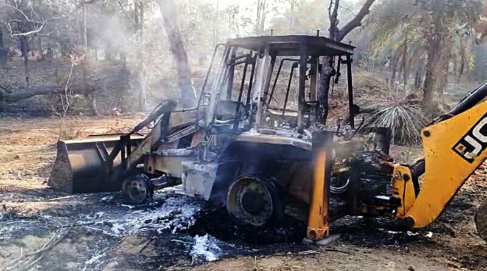
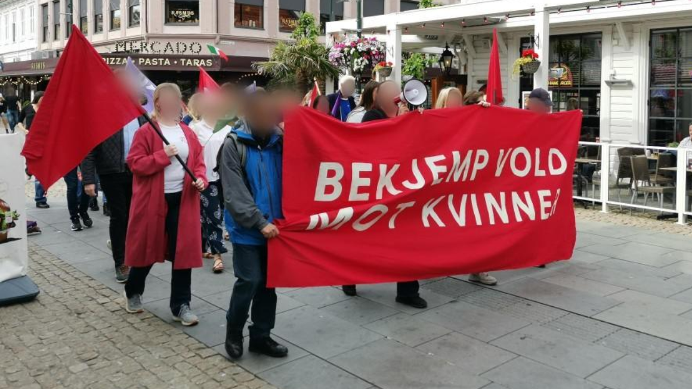
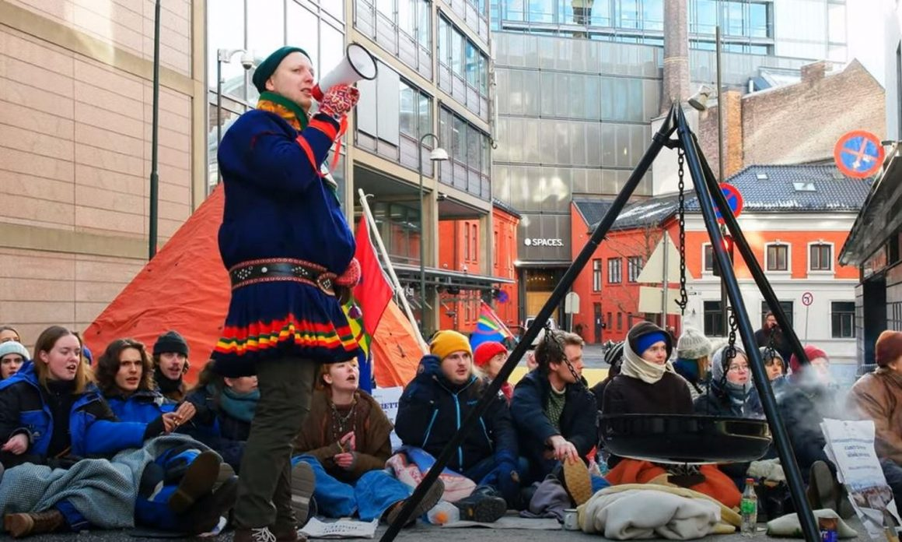

{kind=link}


[This lan. PDF][This lan. ODT][This lan. MD][This lan. TXT][This lan. TXT LIST]
Please select your language 请选择你的语言:
作者: Rosa Minine
描述: 歌手，词曲作者和乐器演奏家尼尔兹·卡瓦略（Nilze Carvalho）在每个星期日的53版中接受了尼尔兹（Nilze）的现场直播，并在每个星期日举行。
发布时间: 2023-03-02T00:05:00-03:00
修改时间: None
更新的时间: None
图片: ['printfriendly-pdf-email-button-md.png', 'svg+xml;base64,PHN2ZyB4bWxucz0iaHR0cDovL3d3dy53My5vcmcvMjAwMC9zdmciIHdpZHRoPSIxOTQiIGhlaWdodD0iMzAiIHZpZXdCb3g9IjAgMCAxOTQgMzAiPjxyZWN0IHdpZHRoPSIxMDAlIiBoZWlnaHQ9IjEwMCUiIHN0eWxlPSJmaWxsOiNjZmQ0ZGI7ZmlsbC1vcGFjaXR5OiAwLjE7Ii8+PC9zdmc+']
部分: Agenda Cultural
标签: ['Agenda Cultural', 'cantora', 'compositora', 'Depois do Café', 'live', 'Nilze Carvalho', 'Youtube']
类型: article
歌手，词曲作者和乐器演奏家 Nilze Carvalho ，采访了NAIDS 53它的演出是每个星期日的11:30演出，尼尔兹(Nilze) - 咖啡后的现场直播，现场表演，其中包含曲目撰写的曲目和经典歌曲，又是巴西音乐的经典歌曲，以及瞄准的荣誉艺术家。 传输通过您的YouTube频道。
下图：上周日直播，26/02。
News Source: https://anovademocracia.com.br/depois-do-cafe-com-nilze-carvalho-3/
作者: Rosana Bond
描述: 去年11月/12月，TocantinsAvá-Canoiro部落正在庆祝其领土的合法化
发布时间: 2023-03-02T12:00:00-03:00
修改时间: 2023-03-03T12:28:18-03:00
更新的时间: 2023-03-03T12:28:18-03:00
图片: ['ava_canoeiro_6-fa7-768x546-1.jpg', 'svg+xml;base64,PHN2ZyB4bWxucz0iaHR0cDovL3d3dy53My5vcmcvMjAwMC9zdmciIHdpZHRoPSIxOTQiIGhlaWdodD0iMzAiIHZpZXdCb3g9IjAgMCAxOTQgMzAiPjxyZWN0IHdpZHRoPSIxMDAlIiBoZWlnaHQ9IjEwMCUiIHN0eWxlPSJmaWxsOiNjZmQ0ZGI7ZmlsbC1vcGFjaXR5OiAwLjE7Ii8+PC9zdmc+']
部分: Povos Indígenas
标签: ['Avá-canoeiro']
类型: article
 照片：繁殖
照片：繁殖
TocantinsAvá-Canoiro Tribe几周前，即去年11月/12月，当时他是联邦法官Eduardo de Assis Ribeirofilho的荒谬决定，庆祝他的合法化。
他从ti taegoãa拿出三分之一，离开印第安人只有一块(大多数人无法种植的地方)并切割通往爪哇河的水域。 根据土著成员委员会的埃里安·佛朗哥(Eliane Franco)的说法(中小型企业) - 区域goiás/tocantins，avá-canoiro的人们诉诸于宣布禁运的司法。
“法官没有考虑到持有的专业知识，宣布土著登陆泰戈·美(Taegoâwa)为Avá-Caneiro人民的传统土地。 法官在案件中的决定失败了(…)，其中减少了土著，进入爪哇河和该领土内的非土著居民的永久性。”他解释说。
她说：“Avá-Caneiro不接受任何类型的谈判。” 一位部落领导人Kamutaja Silvaãwa指出：“被批准的提出对我们的土著人民来说是不利的，因为他们对人民有一个无法居住的地方。”
法院的裁决虚假陈述了土著威慑界限的研究，在1988年《宪法》第231条和第232条中已经保证。
News Source: https://anovademocracia.com.br/numa-canetada-juiz-reduz-area-ava-canoeiro/
作者: Gabriel Artur
描述: 2月23日晚上，土著瓜哈哈拉（Guajajara）种族，乔恩·卡纳（JoneCanaréGuajajara）和农民被枪杀。 袭击发生在Toarizinho村，
发布时间: 2023-03-02T14:35:50-03:00
修改时间: 2023-03-03T12:27:45-03:00
更新的时间: 2023-03-03T12:27:45-03:00
图片: ['WhatsApp-Image-2023-02-24-at-07.06.18.jpeg', 'svg+xml;base64,PHN2ZyB4bWxucz0iaHR0cDovL3d3dy53My5vcmcvMjAwMC9zdmciIHdpZHRoPSIxOTQiIGhlaWdodD0iMzAiIHZpZXdCb3g9IjAgMCAxOTQgMzAiPjxyZWN0IHdpZHRoPSIxMDAlIiBoZWlnaHQ9IjEwMCUiIHN0eWxlPSJmaWxsOiNjZmQ0ZGI7ZmlsbC1vcGFjaXR5OiAwLjE7Ii8+PC9zdmc+', 'svg+xml;base64,PHN2ZyB4bWxucz0iaHR0cDovL3d3dy53My5vcmcvMjAwMC9zdmciIHdpZHRoPSI4MzkiIGhlaWdodD0iNTQ3IiB2aWV3Qm94PSIwIDAgODM5IDU0NyI+PHJlY3Qgd2lkdGg9IjEwMCUiIGhlaWdodD0iMTAwJSIgc3R5bGU9ImZpbGw6I2NmZDRkYjtmaWxsLW9wYWNpdHk6IDAuMTsiLz48L3N2Zz4=', 'svg+xml;base64,PHN2ZyB4bWxucz0iaHR0cDovL3d3dy53My5vcmcvMjAwMC9zdmciIHdpZHRoPSIxMDAwIiBoZWlnaHQ9IjYzNiIgdmlld0JveD0iMCAwIDEwMDAgNjM2Ij48cmVjdCB3aWR0aD0iMTAwJSIgaGVpZ2h0PSIxMDAlIiBzdHlsZT0iZmlsbDojY2ZkNGRiO2ZpbGwtb3BhY2l0eTogMC4xOyIvPjwvc3ZnPg==', 'svg+xml;base64,PHN2ZyB4bWxucz0iaHR0cDovL3d3dy53My5vcmcvMjAwMC9zdmciIHdpZHRoPSI1NDgiIGhlaWdodD0iNTkwIiB2aWV3Qm94PSIwIDAgNTQ4IDU5MCI+PHJlY3Qgd2lkdGg9IjEwMCUiIGhlaWdodD0iMTAwJSIgc3R5bGU9ImZpbGw6I2NmZDRkYjtmaWxsLW9wYWNpdHk6IDAuMTsiLz48L3N2Zz4=']
部分: Povos Indígenas
标签: ['guajajara', 'TI Arariboia', 'TI Cana Brava']
类型: article
 土著和农民在ti arariboia被枪杀。 照片：繁殖
土著和农民在ti arariboia被枪杀。 照片：繁殖
2月23日晚上，瓜哈哈拉(Guajajara)的土著种族，乔恩·卡纳(JoneCanaréGuajajara)和农民赢得了胜利。 袭击发生在土著土地的Aldeiatoarizinho(的)Arariboia，电线(嘛). O indígena erafilho do cacique Tomazinho Guajajara.
Até o momento, sabe-se que as vítimas foram levadas, em estado grave, para umhospital próximo ao território e estão sob cuidados médicos. As informaçõessão do Conselho Indigenista Missionário (中小型企业) - 地区马兰哈奥。
此案是自2023年初以来对该地区土著人民的第六次袭击(全部由大型土地所有者资助和组织)和农民和人民瓜贾拉，awá-guajá和Kaapor。
对于Cimi -Maranhão地区，土著人谴责了暴力和领土周围的增加：“该地区正在发生的事情是种族灭绝。 它非常暴力，对我们所有人来说非常危险，尤其是在电线中。”
一月份的一月份，一辆身份不明的汽车被一辆身份不明的汽车枪杀了土著年轻人。 照片：繁殖
从1月9日至02年23/02，在2023年，Tiarariboia附近发生了六次袭击。46岁的何塞·伊纳西奥·瓜贾拉(JoséInácioGuajajara)在01/24中被发现死于格拉哈城市附近的ti cana brava附近的BR-226河岸的暴力尸体。 但是，根据Medicinelegal研究所(IML)，土著人死于“由于自然原因”。
三天后，在01/28，现年45岁的瓦尔德玛·马西亚诺·瓜贾拉(Valdemar Marciano Guajajara)被发现在Amarante doMaranhão市死亡，该城市大约有637 Quiloters，来自首都圣洛伊斯(SãoLuís)，并与Ti Arariboia接壤。 西米(Cimi)的区域性多玛汉(Domaranhão)说，诺瓦·维亚纳(Nova Viana)村的土著人被发现“表明他被残酷地谋杀”。
JoséinácioGuajajara和Valdemar Marciano Guajajara。 照片
现年57岁的工人Raimundo Ribeiro Da Silva已经在01/31，在位于Ti Arariboia的Abraão村被枪杀。 雷蒙多(Raimundo(Sesai)，在阿拉姆市。
现年57岁的Raimundoribeiro da Silva在位于Ti Arariboia的亚伯拉罕村被枪杀。 照片：繁殖
除这些情况外，森林的监护人(由Peoplesguajajara，Awá-Guajá和Kaapor塑造的团体，2007年保护土著土地)从The Tiarariboia发现，今年05年1月1日，在Jenipapo村的尼巴波村的土著Namata的坟墓中，在Bom Jesus Das Selvas市的市政当局。这真是一个自愿隔离的土著。 不可能构成死亡原因或发生多长时间。
在2003年至2021年之间，CACI平台绘制了由CIMI在巴西的土著人民系统化的案件，记录了50种土著土著土著人民在马兰哈奥(Maranhão)； 其中21 ERA Arariboia Emindigenas。
作者: Comitê de Apoio
描述: 27/02，数十名居民在玛格拉大都会地区萨兰迪市议会前会面，以抗议增加的增加
发布时间: 2023-03-02T15:19:58-03:00
修改时间: 2023-03-02T15:22:49-03:00
更新的时间: 2023-03-02T15:22:49-03:00
图片: ['image1-1.jpg', 'svg+xml;base64,PHN2ZyB4bWxucz0iaHR0cDovL3d3dy53My5vcmcvMjAwMC9zdmciIHdpZHRoPSIxOTQiIGhlaWdodD0iMzAiIHZpZXdCb3g9IjAgMCAxOTQgMzAiPjxyZWN0IHdpZHRoPSIxMDAlIiBoZWlnaHQ9IjEwMCUiIHN0eWxlPSJmaWxsOiNjZmQ0ZGI7ZmlsbC1vcGFjaXR5OiAwLjE7Ii8+PC9zdmc+', 'svg+xml;base64,PHN2ZyB4bWxucz0iaHR0cDovL3d3dy53My5vcmcvMjAwMC9zdmciIHdpZHRoPSIxMzg2IiBoZWlnaHQ9Ijc4MCIgdmlld0JveD0iMCAwIDEzODYgNzgwIj48cmVjdCB3aWR0aD0iMTAwJSIgaGVpZ2h0PSIxMDAlIiBzdHlsZT0iZmlsbDojY2ZkNGRiO2ZpbGwtb3BhY2l0eTogMC4xOyIvPjwvc3ZnPg==', 'svg+xml;base64,PHN2ZyB4bWxucz0iaHR0cDovL3d3dy53My5vcmcvMjAwMC9zdmciIHdpZHRoPSI2NDAiIGhlaWdodD0iNDgwIiB2aWV3Qm94PSIwIDAgNjQwIDQ4MCI+PHJlY3Qgd2lkdGg9IjEwMCUiIGhlaWdodD0iMTAwJSIgc3R5bGU9ImZpbGw6I2NmZDRkYjtmaWxsLW9wYWNpdHk6IDAuMTsiLz48L3N2Zz4=', 'svg+xml;base64,PHN2ZyB4bWxucz0iaHR0cDovL3d3dy53My5vcmcvMjAwMC9zdmciIHdpZHRoPSI4MDAiIGhlaWdodD0iNjAwIiB2aWV3Qm94PSIwIDAgODAwIDYwMCI+PHJlY3Qgd2lkdGg9IjEwMCUiIGhlaWdodD0iMTAwJSIgc3R5bGU9ImZpbGw6I2NmZDRkYjtmaWxsLW9wYWNpdHk6IDAuMTsiLz48L3N2Zz4=', 'svg+xml;base64,PHN2ZyB4bWxucz0iaHR0cDovL3d3dy53My5vcmcvMjAwMC9zdmciIHdpZHRoPSI2NDAiIGhlaWdodD0iNDgwIiB2aWV3Qm94PSIwIDAgNjQwIDQ4MCI+PHJlY3Qgd2lkdGg9IjEwMCUiIGhlaWdodD0iMTAwJSIgc3R5bGU9ImZpbGw6I2NmZDRkYjtmaWxsLW9wYWNpdHk6IDAuMTsiLz48L3N2Zz4=', 'svg+xml;base64,PHN2ZyB4bWxucz0iaHR0cDovL3d3dy53My5vcmcvMjAwMC9zdmciIHdpZHRoPSI2NDAiIGhlaWdodD0iNDgwIiB2aWV3Qm94PSIwIDAgNjQwIDQ4MCI+PHJlY3Qgd2lkdGg9IjEwMCUiIGhlaWdodD0iMTAwJSIgc3R5bGU9ImZpbGw6I2NmZDRkYjtmaWxsLW9wYWNpdHk6IDAuMTsiLz48L3N2Zz4=', 'svg+xml;base64,PHN2ZyB4bWxucz0iaHR0cDovL3d3dy53My5vcmcvMjAwMC9zdmciIHdpZHRoPSI2NDAiIGhlaWdodD0iNDgwIiB2aWV3Qm94PSIwIDAgNjQwIDQ4MCI+PHJlY3Qgd2lkdGg9IjEwMCUiIGhlaWdodD0iMTAwJSIgc3R5bGU9ImZpbGw6I2NmZDRkYjtmaWxsLW9wYWNpdHk6IDAuMTsiLz48L3N2Zz4=', 'svg+xml;base64,PHN2ZyB4bWxucz0iaHR0cDovL3d3dy53My5vcmcvMjAwMC9zdmciIHdpZHRoPSIxNTE1IiBoZWlnaHQ9Ijg1NCIgdmlld0JveD0iMCAwIDE1MTUgODU0Ij48cmVjdCB3aWR0aD0iMTAwJSIgaGVpZ2h0PSIxMDAlIiBzdHlsZT0iZmlsbDojY2ZkNGRiO2ZpbGwtb3BhY2l0eTogMC4xOyIvPjwvc3ZnPg==', 'svg+xml;base64,PHN2ZyB4bWxucz0iaHR0cDovL3d3dy53My5vcmcvMjAwMC9zdmciIHdpZHRoPSIxMzg2IiBoZWlnaHQ9Ijc4MSIgdmlld0JveD0iMCAwIDEzODYgNzgxIj48cmVjdCB3aWR0aD0iMTAwJSIgaGVpZ2h0PSIxMDAlIiBzdHlsZT0iZmlsbDojY2ZkNGRiO2ZpbGwtb3BhY2l0eTogMC4xOyIvPjwvc3ZnPg==']
部分: Nacional
标签: ['coleta de lixo', 'sarandi']
类型: article
 群众否认萨兰迪抗议的垃圾收集率提高。 照片数据库和
群众否认萨兰迪抗议的垃圾收集率提高。 照片数据库和
27/02，数十名居民在玛格拉大都会地区的萨兰迪市议会面前会面，以抗议垃圾收集率的提高。
此重新调整在2022年底获得了批准，从2.90新元增加到每平方米的建筑面积费用3.15A $。 为了应用这种新票价，Relefecter更新了房地产通用价值工厂，使所有物业及其各自的地区建立了利瓦尼化。 但是，我与居民契约，用usode _rones_制作的住宅录像的更新与现实不符：一位绅士谴责了200平方米的甲肾上腺素，在此测量中折叠了几乎400平方米。 阐明了测量的质量，居民用_drona_的“副本”使用：
垃圾收集率的增加从300％提高，达到$ 1,900.00的价值。 根据当地媒体的说法，该金额比玛丽格的同一服务收取的金额高67.4％。
增加垃圾收集率 +财产税。 照片：数据库和
一位居民报告说，她的房子正在建设中，也就是说，它仍然不会造成家庭浪费，却收到了700美元以上的票。
作为抗议的一种形式，一名居民将垃圾带到市政厅的前面，修理了垃圾费收费的票，金额为330美元。 ”。
他将垃圾居住在市政厅，拒绝了垃圾收集服务。 照片：Banco数据和
照片：数据库和
市政厅用来测量住房区域的生活无人机。 照片：照片：数据库和
27/02的演示是本月的第二天，大约有70人。 14岁的泰勒(Taylor)陪同父亲参加众议院会议，发生在示威期间。 根据学生的说法，人口正在观看会议，要求将撤销插入大门。 他报告说，议员们没有任何人说话的余地，一旦萨兰迪斯开始半场，会议就结束了。
像往常(下午)，市政监护人(通用)和Ronda Ostensiva具有摩托车支撑(rocam)，当他们通过示威时，这是由人口嘘。 一位表面人士说：“他们来保护他们。”
会议结束后，人口在城市周围走到市长沃尔特·沃尔帕托(Walter Volpato)的房屋(PSC). Em frente à residência, a população entooupalavras de ordem como Revoga já!, Po povo na rua, prefeito a culpa ésua!e Se você não revogar, isso aqui vai aumentar!. Assim que chegaramao local, as massas repararam que luzes foram apagadas e cortinas foramfechadas.
居民票中的轰动。 照片：数据库和
另一位居民谴责垃圾收集率已转移到提供收集和最终目的地服务的公司Estre的公司，Estre已在美国公开交易。 因此，卵形对人群或公共服务不会更好。
根据该日期的消息来源，与Ampresa Estre的Sarandi市政厅协议在2022年为750万美元，而随着2023年利率的上涨，该公司将收到的金额将为20美元百万。 然而，人口增长，并且是因为稳定性的固体废物的产生。
在小册子到达房屋时，居民起义后，萨兰迪的赞赏提议为那些支付票的人折扣30％，选择分期付款的人享受15％的折扣。
但是，只有23％的Sarandienses在2022年以现金支付了IPTU(去年，IPTU和垃圾收集费在同一张票中收取). Ouseja, o suposto desconto aplica-se a uma parcela muito reduzida da populaçãoque tem condições de pagar o valor à vista. Na manifestação, todos osentrevistados repudiaram fortemente esta medida.
Além da presença nas manifestações, a população também está expressando suarevolta através das redes sociais como Instagram e Facebook. Os comentários aseguir foram obtidos em postagens do Instagram:
照片：繁殖/社交网络受欢迎的主张是立即撤销增加，并且一些监视器表示，他们不打算以堕落的形式支付单元。 计划进行03/2的新演示，并将使用新信息更新此文章。
News Source: https://anovademocracia.com.br/pr-moradores-de-sarandi-se-revoltam-contra-aumento-da-taxa-de-coleta-de-lixo/
作者: maoist
描述: 从工人反对6的工人很容易。 但这是法西斯教会传统的一部分。 政府减少了，主要的C ...
时间: 2023-03-02T16:03:00+01:00
图片: []
...教育部长瓦尔迪塔拉(Valditara)是“魔杖”城市的米开朗基诺高中(由tivù进行记录). Un'aggressione sferrata a freddo da 6 picchiatoriche sembravano indemoniati, infierire contro un solo studente di opinionidiverse. Si da il caso che questi 6 individui appartengono ad una organizzazionegiovanile del partito Fratelli D'Italia, la cui segretaria Giorgia Meloni èanche a capo dell'attuale governo in Italia. Che discussioni
氧化剂。
News Source: https://proletaricomunisti.blogspot.com/2023/03/pc-2-marzo-fascisti-firenze-un-commento.html
作者: Giovanna Maria
描述: 市政公务员进行了罢工，需要调整工资，更好的工作条件并拒绝反人民改革。
发布时间: 2023-03-02T16:31:43-03:00
修改时间: 2023-03-03T12:27:16-03:00
更新的时间: 2023-03-03T12:27:16-03:00
图片: ['sintrapp-1.webp', 'svg+xml;base64,PHN2ZyB4bWxucz0iaHR0cDovL3d3dy53My5vcmcvMjAwMC9zdmciIHdpZHRoPSIxOTQiIGhlaWdodD0iMzAiIHZpZXdCb3g9IjAgMCAxOTQgMzAiPjxyZWN0IHdpZHRoPSIxMDAlIiBoZWlnaHQ9IjEwMCUiIHN0eWxlPSJmaWxsOiNjZmQ0ZGI7ZmlsbC1vcGFjaXR5OiAwLjE7Ii8+PC9zdmc+', 'svg+xml;base64,PHN2ZyB4bWxucz0iaHR0cDovL3d3dy53My5vcmcvMjAwMC9zdmciIHdpZHRoPSIxMDIxIiBoZWlnaHQ9Ijc2OCIgdmlld0JveD0iMCAwIDEwMjEgNzY4Ij48cmVjdCB3aWR0aD0iMTAwJSIgaGVpZ2h0PSIxMDAlIiBzdHlsZT0iZmlsbDojY2ZkNGRiO2ZpbGwtb3BhY2l0eTogMC4xOyIvPjwvc3ZnPg==']
部分: Nacional
标签: ['greve', 'Luta Classista', 'Servidores públicos']
类型: article
 市政仆人开始在Prudente总统中罢工(sp). Foto: Itamar Batista/AI/Sintrapp
市政仆人开始在Prudente总统中罢工(sp). Foto: Itamar Batista/AI/Sintrapp
市政公务员进行了罢工，需要重新调整，更好的工作条件并拒绝反人民改革。 Asmobilization发生在Paraíba的州(pb)， 圣保罗(sp)和帕拉纳(PR)在2月底和3月初。
在总统公民( sp)3月1日，我们在城市行政人员中赚取薪水较少的市政仆人于3月1日罢工Nodia。 罢工参加了图书馆助手，电话辅助机构，厨师，瓦工仆人，一般服务和手表。 他们要求更好的工作条件和薪资。
他们是So称为“参考1”，“进步”或“级别”工资的工人。 停工时间是时间。
根据Sintrapp总裁Luciana Telles的说法，现任市长Prudente市长Ed Thomas(无聚会)，他曾在选举营期间承诺，他将特别注意服务器的主张，即他们收到的少，但到目前为止尚未做任何事情。 据总统称，他们的工资不到最低工资。 城市建议占工资的10％，这将为工人提供约100卢比的薪水。
Foz doIguaçu市政仆人与养老金改革作斗争。 照片：Portalda Cidade
在Paraná的 foz doiguaçu中，来自25/02联合股东大会的各个部门的6,000多个服务器拒绝了经过翻新的市政社会保障。 工人划分了，如果不参加他们的智慧，他们将进行罢工。这项改革旨在增加57岁妇女的退休，更多地退休。 此外，纽约市试图使社会保障的货币来自三个薪水，而工会将来自五个薪水。
在 bayeux 的市政当局中(pb)，3月1日，大罢工无限期地开始。 工人拒绝捆绑的不同类别的工资，即2022年1月追溯的警惕性的未付款，国家地板的不实施以及不付款的夜晚和不健康的调查。
在 Bauru (sp)，在03/05年，市政仆人将开会，他们将决定工人的罢工。 保证需要重新调整24.37％，即使在过去两年中，该市拒绝付款。
News Source: https://anovademocracia.com.br/protestos-de-servidores-em-todo-pais-exigem-direitos/
作者: Gabriel Artur
描述: 在3月1日凌晨，大约120个农民占领了位于Chapada Diamantina（BA）地区的Itaberaba市的圣玛丽亚农场（Santa Maria Farm）。
发布时间: 2023-03-02T16:41:47-03:00
修改时间: 2023-03-03T12:26:45-03:00
更新的时间: 2023-03-03T12:26:45-03:00
图片: ['Ocupacao-Mulheres-na-Bahia-1024x461-1.jpeg', 'svg+xml;base64,PHN2ZyB4bWxucz0iaHR0cDovL3d3dy53My5vcmcvMjAwMC9zdmciIHdpZHRoPSIxOTQiIGhlaWdodD0iMzAiIHZpZXdCb3g9IjAgMCAxOTQgMzAiPjxyZWN0IHdpZHRoPSIxMDAlIiBoZWlnaHQ9IjEwMCUiIHN0eWxlPSJmaWxsOiNjZmQ0ZGI7ZmlsbC1vcGFjaXR5OiAwLjE7Ii8+PC9zdmc+']
部分: Luta Pela Terra
标签: []
类型: article
 占领在巴伊亚动员了约120名农民妇女。 照片：繁殖
占领在巴伊亚动员了约120名农民妇女。 照片：繁殖
3月1日的黎明，约有120名农民占领了伊萨巴巴市的伊萨巴巴市的玛丽亚(Fazenda Maria)(BA).A fazenda ocupada tem quase 2 mil hectares de terra e está abandonada. Segundoinformações do Movimento dos Trabalhadores Rurais Sem Terra (MST)，占领是没有土地的妇女斗争的一部分，这是“饥饿和暴力的农业综合企业的座右铭”。 通过土地和民主，妇女抵抗!”。
并报道说，1月下旬和2月初，巴伊亚州的农民动员标志着。 1月30日，Aodia 2月13日，约有2,600名农民参加了土地的动员，封闭了旧州的高速公路或占领建筑物。 在ValeroJequiriçá，有250个家庭占领了两个农场。 圣克鲁兹德·卡巴利亚市被200个农民占领(代表另外400)高速公路和公共服务的Pomelhores以及建造桥梁。 在Sentosé中，有300名农民抗议澳大利亚矿业公司铁，并要求立即沥青达巴-210。 在Correntina，在Bahian Cerrado中，有一次大规模抗议敏捷和枪支。 在Itabela中，有178个家庭被从他们的terras中丢弃。 在27/02的新职业浪潮中，一月和2月在巴伊亚的特征动员总共9,500个农民。
News Source: https://anovademocracia.com.br/120-camponesas-ocupam-latifundio-na-chapada-diamantina/
作者: maoist
描述: PC 2月23日：工人培训“帝国主义战争和无产阶级人士”。 反对国土辩护”资本主义/帝国主义PC 16 ...
时间: 2023-03-02T16:54:00+01:00
图片: ['download.jpg']
 这个在线工人培训的新周期将致力于以帝国主义战争的主题以及与之抗争的主题形成无产阶级的前卫。
这个在线工人培训的新周期将致力于以帝国主义战争的主题以及与之抗争的主题形成无产阶级的前卫。
在实际层面上，共产党无产阶级发展了一项工人动议，现在的必要立场是在某些工厂中遭到工人的签名，并在反对战争的大会中进行了报道。
我们认为，今天这是工人和无产阶级人斗争中的主要任务，基于他们，他们继续采取最高的行动形式，组织反对正在进行的帝国主义战争，乌克兰，这可以进一步发展和导致世界第三名。
正是由于这个原因，必须了解在这种情况下必须采取工人阶级行动的立场是什么。
在第一个周期中，我们将使用列宁的著作，取回步骤死亡，我们将纪念它们。
每个人的无产阶级，单独或集体，都可以而且必须以最坚定的形式，一致，问题和行动提案的形式成为这个周期，因为显然这种形式是为实践服务或与之无情的联系。
News Source: https://proletaricomunisti.blogspot.com/2023/03/pc-2-marzo-la-formazione-operaia-in.html
作者: DEM VOLKE DIENEN
时间: 2023-03-02T17:00:53+00:00
图片: []
标签: ['Resolution', 'ikb']
类别: None
 我们记录了分解共产党联邦政府决议的秘密翻译(我b).
我们记录了分解共产党联邦政府决议的秘密翻译(我b).
Proletarier aller L ander, vereinigt euch!
Gegen die imperialistische Aggression, erhebt das Banner des Volkskrieges!
Am 24. Februar wird der russische Aggressionskrieg gegen die Ukraine ein Jahrlang andauern. Dieser ungerechtfertigte Krieg hat Hunderttausende von Totenund Verwundeten und Millionen von Fluchtlingen hervorgebracht. Durch dieheldenhafte Verteidigung des Heimatlandes durch das ukrainische Volk, trotzdes nationalen Verraterregimes unter der Fuhrung des Yankee-Lakaien Zelensky,war der russische Aggressor nicht in der Lage, seine Kriegsziele zu erreichen.
Das Zusammentreffen einer Reihe von Widerspruchen und Interessen, die derzeitin der Ukraine auf dem Spiel stehen, hat bei einigen kommunistischen undallgemein antiimperialistischen Kraften nicht wenig Verwirrung gestiftet,einige scheinen sogar zu glauben, dass wir uns am Rande eines neuen Weltkriegsbefinden. Daher ist es notwendig, im Namen des Internationalen KommunistischenBundes eine klare Position zu etablieren.
Der Hauptwiderspruch ist der zwischen der Ukraine, einem vom Imperialismusunterdruckten Land, und Russland, einem imperialistischen Land. Ungeachtet desKlassencharakters des ukrainischen Regimes und seines Dienstes an denInteressen anderer imperialistischer Machte, vor allem der Yankee-Supermacht,fuhrt jede Unklarheit in diesem Punkt dazu, der Ukraine ihr Recht aufUnabhangigkeit und nationale Souveranitat abzusprechen und damit zumindestindirekt die Interessen des russischen Imperialismus zu unterstutzen.
我们必须竭尽所能，要求乌克兰人和俄罗斯人民之间的友谊。 两名沃尔克(Volker)曾经在列宁和斯大林(Lenin)和斯大林(Stalin)的锤子和镰刀(Sickle)下在红色旗帜下的groassowjetunion，现在被战场上的帝国主义者的阴谋互相驱使。 共产党人在形成，迪尔特罗图尔人和所有一致的反帝国主义者都具有特殊责任，宣传反对俄罗斯帝国主义战争，他们与帝国主义国家的斗争以及其攻击战争，并以新的高位授予帝国主义的所有手段战争并承诺将进入各自的帝国主义国家。 俄罗斯的Diemarxist居民玛利诺斯必须在争取其党派的党派和所有困难的斗争中取得进步社会主义国内国家，更好。
正如毛泽东主席所说，我们共产党不惧怕世界大战，我们不惧怕核战争，我们反对它，并尽一切努力通过发展革命来蒸发与Volkskra的反动战争。 在我们期间，我们永远不会忘记忘记。 帝国主义侵略必须在人民战争中被击败。
乌克兰俄罗斯帝国主义者!
乌克兰人民的斗争生活!
与洋基帝国主义及其所有同伴!
为争取共产党乌克兰，俄罗斯和世界各地的共产党重组的斗争中的艺术!
国际共产党联邦8 \。 2023年2月
作者: maoist
描述: 利维奥·佩皮诺（Livio Pepino）宣言2月28日在没有（不可预测的）新事实的情况下，阿尔弗雷多·卡萨托（Alfredo Cosato）将死亡。 为此，他们带来了决定...
时间: 2023-03-02T17:06:00+01:00
图片: ['21pol2-nordio-ansa.jpg', '26pol2-cospito-lapresse.jpg']
!(Images/proletari comunisti/2023-03-02T17-06-00-01-00/21pol2-nordio-ansa.jpg) Livio Pepino宣言2月28日
Livio Pepino宣言2月28日
在没有(不可预料的)新事实阿尔弗雷多·卡萨托(Alfredo Cosato)将会死亡。 为此，他们首先将部长的决定和卡萨特(Cassation)决定。 尽管如此，确认41 BIS政权并不是一条强制性的道路。 正如反玛菲亚董事提出的替代方案所示，这不是给瓜迪吉利的。 这不是出于卡斯的法院，检察官提出的反对措施证明了这一点。 相比(和)贫穷并否认测量测量措施； 条件
在臭名昭著的罢工超过四个月之后，佩斯卡拉无政府主义者的健康状况以及其自己的媒体接触(制作)我不切实际(或恢复)与功能相关的连接和商定的颠覆性活动； 与41 Bisira相比，在限制性电路中处理cosenza的腹腔运动的可能性(和)得到同一监狱政府的支持。 因此，采用的部长和法官是一种选择，并且像其他选择一样，它具有含义和信息，甚至具有一般性。
第一个信息是对人类生命的蔑视，在国家道德观念的祭坛上牺牲。 在80年代，玛格丽特·撒切尔(Margaret Thatcher)对IRA ECHE的激进分子的政策激发了这种环境，这激发了Erdogan和Al Sisi的政策，这激发了Erdogan和Al Sisi的政策：专制和斗气的意识形态一直是Fabbricadella的品牌。(甚至由法西斯主义理论化)在与《宪法》第2条的信与精神的净对立面中，该宪法需要对所有人的不可侵犯权利和干预措施的启动者的法规。在当今的选择中，在伴随它们的气候下，还有一个对国家命运的危险的另一个要素：企业，敌人不断用作“大规模射击武器”的建筑物，作为面对有效的经济困难的转移，最重要的是，作为将被抢购的独裁主义漂移的理由。 该行动已经进行了一段时间，重复的命题“公司的敌人”：狂欢的经常风光，被认为是野蛮人的部落(需要临时立法干预措施); 没有学习而不是学习学校并寻求执法对抗的学生； 用油漆涂抹的环保主义者(可洗的)艺术品，甚至参议院的入口，因此“使国家处于攻击状态”(s!). Con il "caso Cospito" si è alzato il tiro: il"pericolo anarchico" è diventato, pur in assenza (至少目前)值得注意的是，最大的国家紧急情况，重复剧本，该国一再经历了剧烈的经历。
因此，这个故事揭示了在令人不安的政治季节中个人戏剧的不正当交织。
News Source: https://proletaricomunisti.blogspot.com/2023/03/pc-2-agosto-assassini-fuori-cospito-dal.html
作者: maoist
描述: 我们已经对每场战争进行了数十年的作品，在残骸托马索·迪·弗朗切斯科（Tommaso di Francesco）现场的政府中，有利于任何救赎...
时间: 2023-03-02T17:15:00+01:00
图片: ['01soc1-controapertura-le-bare-dei-bambini-nel-palasport-di-crotone-gettyimages.jpg', 'pssibile-altra-28-prima.jpg']
 !(Images/proletari comunisti/2023-03-02T17-15-00-01-00/pssibile-altra-28-prima.jpg)
!(Images/proletari comunisti/2023-03-02T17-15-00-01-00/pssibile-altra-28-prima.jpg)
Tommaso difrancesco几十年来，我们一直在反对每场战争，因此，对于那些逃避战争而逃避新生活的人来说，都赞成所有的直觉和接受。 因此，在“最后的”大屠杀面前，对移民的海洋感到愤怒和无助的绝望，这使我们说，到目前为止，写作只是题词。 面对责任的证据，在地中海泥泞的墓地中喊着人类的人类会没有可怜的沉默。 而不是。 这次，有一个政府抚摸，为受害者的辩解和责备，为此，这样做似乎是因为它声称，作为必要的解放者，人们的克罗特罗大屠杀人淹没了一米，从河中淹没了一米死亡现在在一个小时内增长。
Conconsiglio Giorgia Meloni的总统喊道：“不要利用这些死亡。” 然后是一件野蛮人的野蛮人，在埃克拉瓦塔(Ecravatta)夹克种植中，这重复了他的葬礼上的葬礼，也说服了沉重的事情：“唯一必须肯定的是他们不得离开。孩子们破坏了阿库特罗？ 他们从Smyrne开始，从那个充满了数十亿欧元的土耳其，以阻止数十万人类在欧洲的到来。他们之所以开始，是因为这是我们所生活的时代迁移的本质：他们逃离了我们经常造成的太多战争，因为伊夫80，伊拉克，伊拉克，利比亚，叙利亚，逃避了痛苦 - “难民”之间的虚伪统治地位如何以及“经济移民”和daedisecenaches，这是我们涉及我们的方面，因为它们通常来自非洲国家(例如非洲国家)，贫穷但非常丰富的原材料，我们对我们的发展模式不确定，这是由于新的破坏性气候和环境破坏而造成的。领土。 但是要种植“不要德莫达波”，但要等待“安全的机构到来”。 什么，如何，何时何地？ 部长的谎言通过“人道主义走廊”的引用得到了帮助，当然是积极的，但在海上有所下降。 只有像欧洲这样的州和一个国家的联盟才能是不存在的法律机构安全 - 只有经验丰富的母马鼻孔是另一种选择，不幸的是取消了。
梅洛尼政府是这场悲剧的同谋。 他批准了一项法律，即救援非政府组织在海上的行动与珍藏的抵制，以准备新的悲剧，以及谁 - 想大喊另一个有效的效率 - 确切地对有组织的犯罪开放，使移民的卢克拉斯拉(Lucrasulla)绝望。 邪恶的法律，建立在意识形态“国防国界”，君主和民族主义者的基础上，他公开地采取了对东方民主国家移民作为匈牙利和波兰的措施，最终成为了欧盟，总是Divisasulla进入移民的重新分布。
News Source: https://proletaricomunisti.blogspot.com/2023/03/pc-2-marzo-assassini-la-strage-di.html
作者: prolcomra
描述: 梅洛尼战争 - 家庭政府及其“大西洋主义”发现，德拉吉政府尤其是民主党与前矿工的道路扁平化...
时间: 2023-03-02T17:55:00+01:00
图片: ['Crosetto-generale%20Milley.jpg', 'wired-spese%20militari.jpg']
梅洛尼警告头发政府及其“大西洋主义”，尤其是德拉吉政府与前部长格里尼(Guerrini)一起发现了德拉希政府的斯特拉迪亚族。(估计为8亿，新秘书PD Schlein也投票)，从地中海到印度太平洋的意大利扩张主义。
 “意大利与美国之间的关系涵盖了高战略意义。当前的一般安全框架当今还需要玉米双边关系更多”。 因此，Crosetto部长会见了美国武装部队参谋长将军。
“意大利与美国之间的关系涵盖了高战略意义。当前的一般安全框架当今还需要玉米双边关系更多”。 因此，Crosetto部长会见了美国武装部队参谋长将军。
 来自有线
来自有线
在2022年秋天，国防部的项目草案到达会议厅和参议院长凳。 它涉及能够说平流层的无人机。 在报告中有一些有关未来子的细节(例如，它将用于智力目的，边界控制有数据
天气预报)而不是谁会照顾它(国家行业，好，但是谁？)在哪里。 然后是必要的资金的估计。 酸痛按钮。 至少有2000万，而已经将黑色放在白色上的持续时间为13年(2022-2034)它的成本至少翻倍：5500万欧元。
**无人机是DiCastery Now DiCastery的最饲料技术之一Guididada Guido Crosetto，意大利兄弟的Giorgia Meloni的创始人，Maffidida，Maffidida，Maffidida of Maffidida of Maffidida to Democtmatic of Democtmatiqual党的Lorenzo Guerini，在最新计划付费时期，2022-24，2022-24。国防资金在2022年以3.6％的总预算负担，从2018年开始增加。从200亿多罗(Dieuro和财务经济。 在乌克兰的拉古拉(Lagura)也是大力投资的飞轮。 “如果政府的目标是增加军事费用的时间很少，那么唯一的方法是购买武器”评论说，Vignarca并补充说“其他干预措施最重要的是从长远来看”。2014年，意大利与北约：提高了2％GDP的军事支出的发生率。 从来没有定居者和其他欧洲国家的承诺。 但是维格纳卡(Vignarca)并不乐观：“我们希望，随着明年的预算法，更多的结构性选择将会很生气，这可能会增加已经很高的军事费用”。
News Source: https://proletaricomunisti.blogspot.com/2023/03/pc-2-marzo-latlantismo-del-governo.html
作者: Rosa Minine
描述: 02年3月3日，星期四，歌手和词曲作者JôCarvalho在Carioca Music的中心举行了献给女性的头发Das Flores的表演女孩
发布时间: 2023-03-02T18:02:55-03:00
修改时间: 2023-03-03T16:48:35-03:00
更新的时间: 2023-03-03T16:48:35-03:00
图片: ['CentroMusicaCariocaArturTavola02Mar.jpg', 'svg+xml;base64,PHN2ZyB4bWxucz0iaHR0cDovL3d3dy53My5vcmcvMjAwMC9zdmciIHdpZHRoPSIxOTQiIGhlaWdodD0iMzAiIHZpZXdCb3g9IjAgMCAxOTQgMzAiPjxyZWN0IHdpZHRoPSIxMDAlIiBoZWlnaHQ9IjEwMCUiIHN0eWxlPSJmaWxsOiNjZmQ0ZGI7ZmlsbC1vcGFjaXR5OiAwLjE7Ii8+PC9zdmc+']
部分: Agenda Cultural
标签: ['Agenda Cultural', 'cantora', 'Centro Música Carioca Artur Távola', 'compositora', 'Jô Carvalho', 'Moça Cabelo Flores', 'Rio Janeiro/RJ', 'show']
类型: article
 照片：活动的披露
照片：活动的披露
02年3月3日，星期四，在19H时，歌手和词曲作者jôCarvalho表演oshow 鲜花的头发，献给妇女，在河中的 Carioca ArturdaTávola市区。 Felipe Poli 和JoséMaria的参与。 该中心宣布：“该节目以未出版的作家和作曲家Donosaa MPB为特色，总是寻求旋律和信件的美丽，例如女性的美丽。”
展示地址：里约热内卢/RJ的蒂朱卡，康德·德·邦菲姆街824号。
门票：R $ 20(二十个巴西雷亚斯) - 直接在票房销售。
News Source: https://anovademocracia.com.br/jo-carvalho-moca-do-cabelo-das-flores-no-centro-da-musica-carioca-artur-da-tavola/
作者: Movimento Feminino Popular
时间: 2023-03-03T00:01:00-03:00
图片: []
标签: []
为革命抚养妇女!
3月8日，我们在受欢迎的妇女运动中将我们的初级希腊人带给了世界各地的女工。 我们在垫子里打招呼的人在秘鲁，印度，土耳其和菲律宾正在进行的流行战争中抵抗帝国主义，机会以及整个反应的人打招呼。 他们由马克思列宁主义者 - 马奥主义者共产党政党执导，他们在最前沿与可恨的待遇和相同性作斗争，腐烂和腐烂的资本主义社会保留了妇女的妇女。
我们还向巴勒斯坦，乌克兰，伊拉克，叙利亚和阿富汗的英勇解放战争致意，在那里，群众被驱逐出其领土的入侵部队。 即使没有随之而来的无产阶级方向，群众也为这些国家提供并给出了他们能够实现英勇成就的例子!
我们以同样的精神向巴西工人打招呼 - 工人，农民和诚实的知识分子 - 他们勇敢地与警察犯下的chacinas作战，以她的孩子们的未来与警察犯下的chacinas作战。
这一庆祝时刻也是一个重申我们致力于进一步散发出充满活力的女性运动的承诺，成为您的政治化和组织。 这就是为什么我们召集整个国家的同伴来庆祝这一日期，通过促进MFP Nuclei及其之间的捐赠和广告来庆祝这一日期，并提供以下公告。
点击这里](https://drive.google.com/file/d/1wMX1rwGRMJqDr5YESBf_oq7ZA1hVCe--/view?usp=sharing)用于下载。
News Source: https://brasilmfp.blogspot.com/2023/03/viva-o-08-de-marco-dia-internacional-da.html
作者: Rosa Minine
描述: 03年3月3日，星期五15小时，该节目的稀有音乐巴西人（重点介绍了商会之歌），为大提琴展示了作品Sarabande Largo（2012年）
发布时间: 2023-03-03T00:05:00-03:00
修改时间: 2023-03-03T16:46:23-03:00
更新的时间: 2023-03-03T16:46:23-03:00
图片: ['printfriendly-pdf-email-button-md.png', 'svg+xml;base64,PHN2ZyB4bWxucz0iaHR0cDovL3d3dy53My5vcmcvMjAwMC9zdmciIHdpZHRoPSIxOTQiIGhlaWdodD0iMzAiIHZpZXdCb3g9IjAgMCAxOTQgMzAiPjxyZWN0IHdpZHRoPSIxMDAlIiBoZWlnaHQ9IjEwMCUiIHN0eWxlPSJmaWxsOiNjZmQ0ZGI7ZmlsbC1vcGFjaXR5OiAwLjE7Ii8+PC9zdmc+']
部分: Agenda Cultural
标签: ['Agenda Cultural', 'Andrei Berezin', 'compositor', 'Música Rara Brasileira', 'Sarabende Largo 2012 para violoncelo solo', 'Silvio Ferraz', 'violoncelista', 'Youtube', 'Zenon Instituto Cultural']
类型: article

03年3月3日，星期五15小时，节目稀有巴西音乐，有室内歌，展示了作品 sarabande largo(2012)，作曲家和音乐家 Silvio Ferraz Chagas ，NaturaldeSãoPaulo，Sp。 于2020年5月在俄罗斯的莫斯科记录，与大提琴家 Andrei Berezin **的演讲。 传播通过YouTube上的Canalzenon文化研究所。 组织者说：“在周五，巴西稀有的音乐表演是在巴西，通常没有录音的室内作品。”
作者: Alan Warsaw
发布时间: 2023-03-03T05:56:24+00:00
更新时间: 2023-03-03T16:58:06+00:00
图片: ['21kanker4-800x445.jpg']
标签: ['CPI (maoist)', 'CPI(maoist)', 'Gadchiroli', 'Gadchiroli district', 'India', 'Maharashtra', 'Maharashtra State', 'Naxal', 'naxalites', 'naxals', 'police', 'PPW in India']
类别: ['India', "People's War"]

Gadchiroli区，2023年3月3日：一支由15-20武装纳萨尔斯(Naxalites)进行的小队在马哈拉施特拉邦的Gadchirolidistrict上进行了一次突袭，在该项目中烧了三辆汽车，警方涂上了三辆汽车。据警方称，该事件发生在周四晚上8点左右，位于加德基罗里地区。 他们说，这是本周第二次此类事件。
一位警察官员说：“武装纳萨尔人烧毁了一台JCB机器，一台Poclain机器和一辆Mixermachine车辆，在Puraslagondi-Alengaroad上建造了一座桥梁。” 他说，正在对事件进行调查。
周一晚上，怀疑的纳萨尔人在Thedistrict的Botanpundi-Visamundi Road的道路建设工作中烧毁了一辆搅拌机汽车。
来源：https：//www.deccanherald.com/national/west/naxals-torch-3-wehicles-> in-maharashtras-gadchiroli-district-1196926.html >>来源： /Maha-Naxalites-in-fire-Three-Tehicles-> In-Gadchiroli-District/west/west/News/2927198.html
News Source: https://www.redspark.nu/en/peoples-war/squad-of-naxalites-raids-bridge-construction-site-in-gadchiroli-district/
作者: Tjen Folket Media
描述: 这是国际共产党协会的一份声明，该声明是在在线杂志《共产国际》（ci-ic.org…）发表的第一次联合毛主义国际会议上通过的。
发布时间: 2023-03-03T06:23:46+00:00
修改时间: 2023-03-03T06:23:50+00:00
图片: ['standard-estandar-3-1024x678-3-1160x768.jpg']
标签: None
类别: 'Uttalelser'
*
_贡献者转移为folket媒体转移。
这是国际共产党协会的声明，在第一次联合毛主义国际会议上通过(ci-ic.org).
Uttalelsen er til ære for formann Gonzalo og Perus Kommunistiske Parti (PKP)他和该党在国际共产党运动中扮演的特殊角色。
由[共产主义国际]出版(https://ci-ic.org/blog/2022/12/28/resolution-of-special-acknowledgment-to-chairman-gonzalo-and-the-pcp/)28.12.2022。
Ci-IC同志们写了一篇我们在这里翻译的演讲：
国际共产党联合会的介绍在所有国家 /地区都没有培养!
11 \。 2021年9月，冈萨洛董事长以战争的最高态度献出了生命，并为口头共产党，战争，国际无产阶级和世界人民征服了政治，军事和道德胜利。 我们作为国际共产党联合会第一次会议的参与者(EKF)，这位无产阶级的伟大领导人，并提升到不败的标签的顶部，并发誓要遵循他不寻常的思维样本，并完全奉献给我们的案子，斗争和共产主义脱衣舞。
冈萨洛董事长曾在我们所有人的思想和内心，所有的任务和我们发展的所有斗争中都出现，只是由我们无与伦比的意识形态，马克思主义列宁主义 - 莫主义领导，他以直截了当地且相当相当定义作为马克思主义的新阶段和更高的新阶段。 冈萨洛哈(Gonzalohar)主席教会了我们一个伟大的事实，即今天成为马克思主义者是毛主义者。因此，这次国际会议是设计师冈萨洛(Gonzalo)的斗争的结果，因此它构成了对这种钛思想和行动的致敬。PKP在我们的会议上的存在一直是其成功发展和建立IKF的必不可少的先决条件。
永恒的荣誉荣耀贡萨洛!
秘鲁万岁的共产党和人民的战争所领导!
董事长冈萨洛还没有死，他住在我们里面!
1 \。 国际共产党国际会议
News Source: https://tjen-folket.no/index.php/2023/03/03/ikf-uttalelse-om-formann-gonzalo-og-pkp/
作者: Tjen Folket Media
描述: 根据一份新报告，多达22％的挪威妇女被强奸。 该报告显示，29岁以下的妇女说她们被强奸了，这一数字也增加了……
发布时间: 2023-03-03T06:39:14+00:00
修改时间: 2023-03-03T06:39:16+00:00
图片: ['bekjemp-vold-mot-kvinner.png']
标签: None
类别: 'Innenriks'

*由Eart Folket Media的评论员。
根据一份新报告，已推迟了多达22％的挪威妇女。 该报告显示，29岁以下的妇女说她们被强奸了一倍，所有其他年龄段的人数也增加了。
这是在一项全国调查中揭示的，该调查指出，多达十名挪威妇女中的一名受到伴侣或前伴侣的严重身体暴力。 该调查是这种类型的第二种，自9年前的第一份报告以来，这是重大增加。
该报告还显示了大量严重的性虐待，并向警方报告了五分之一的强奸案。 施虐者通常是寡妇，通常是伴侣或伴侣。
只有4％的人经历了该案已上法庭，该官员已被定罪。
对女性的暴力行为是一个巨大的问题，是父权制的表达，它在该系统中对女性的权力意志。 就在3月8日之前的一周，为革命妇女运动而奋斗的斗争是公平的。
没有暴力和对妇女性虐待的社会的道路，经历了妇女自己的斗争和组织。 它永远不可能依靠国家的剥皮，并从系统中“拯救”妇女的管理和防御。8。 三月，妇女比赛日，是旅行“对抗妇女的暴力行为”的正确日子!就像一个口号要一起战斗，不要遭受苦难。
比赛委员会动员至3月8日：
3月8日在街上!关注比赛委员会。NET，在奥斯陆，卑尔根，特朗德海姆和克里斯蒂安尼斯和克里斯蒂安群岛上进行出勤时间和地点。
News Source: https://tjen-folket.no/index.php/2023/03/03/ny-rapport-en-av-fem-kvinner-er-blitt-voldtatt/
作者: Tjen Folket Media
描述: 争取萨米人权利的激进主义者与环保主义者合并，以越来越有力地抗议该州对萨米的虐待。 政府扎根...
发布时间: 2023-03-03T06:49:26+00:00
修改时间: 2023-03-03T10:07:35+00:00
图片: ['aksjon-fosen-samisk-oslo-2-1160x696.jpg', '6XbY6xlmGzUy_dOGdrHMUpVsPE80Ve3gXKe0Thqx1IxOyeiWDJh53eC101MwyX3UbK3coEW2ZJ71L05rvmsY2RP4InIOjt5-ciSxB3NbnZb263XsmB7cMu_3EgvY_RWUYbpJ_bL6x29PdDA3IHZb9SM', 'fUx87fkyy2JERayQ_RlYJZxg95NqoRDxH918eeeijSTZ0R9wKPhRLvh6NXPlnRB3xu9meBs0C9XsKv9WKrvPANHSSd-dkMm3LzGxveZVs9yFmsBzy1KKN5WZfnxvT3Lzb6Gb6uD035rh5f12oK0l4iY']
标签: None
类别: 'Innenriks'

*由Eart Folket Media的评论员。
更新03.03.2023，11.00：诉讼已完成，在律师承认侵犯人权行为并提供道歉的驯鹿。(NRK写封面[在这里])(https://www.nrk.no/norge/jonas-gahr-store-moter-reindriftssamar-fra-fosen-til-frukost-1.16320203)).
Aktivister som kjemper for samiske rettigheter har fusjonert medmiljøvernere, i en kraftfull protest mot statens overgrep mot samene på Fosen.Regjeringen snubler videre og setter inn politiet mot protesten.
Unge samer, miljøvernere og andre aktivister har de siste dagene protestertmot Olje- og energidepartementet i Oslo. De har tatt seg inn i departementetslobby, sperret dørene til byggene deres, arrangert en serie demonstrasjonerutenfor, og de har tilkjempet seg svært mye oppmerksomhet og solidaritet.
巨大的工厂以及在衰减的维护和运输之间建造的大道路的问题在于它们阻止了冬季牧场的驯鹿。 驯鹿远离道路和磨坊，它被现场的真实驯鹿放牧而被擦除。 这是对密集的 - 萨米行业作为一种经济和文化的大规模攻击，这是保存作为人们的保护的基石。
SO称为“风电场”是欧洲土地上最大的风能项目，自从他们仅在想法阶段就存在以来，驯鹿所有者就一直在与之作斗争。
AP和SP的痛苦政府再次证明了大概的行动羔羊。 总理斯特雷(Støre)再次表现出了他那糟糕的领导特征，政府既不捍卫自己的决定，也没有在这种情况下决心。 在工党内部，由于党的成员在为风力涡轮机战斗中的双方站在双方，冲突再次受到收紧。政府在最高法院无视判决，这是在该系统框架内赢得人民权利的另一个例子。 资产阶级国家是压迫的工具，而不是正义。
_图像：etgigantic风力涡轮机叶子被运输到标记萨米人存在和战斗_的雕像上。
最高法院已判处州和政府。 挪威最高的资产阶级法院宣布，在萨米西南部放牧区中部建造的为驯鹿建造的风力涡轮机是由无效的许可证建造的。 根据判决，在特特拉格(Trøndelag)的Fose建造两个被称为“风电场”的许可证是与萨米人的人权作为土著人民的权利。 判决在500天的一边失败了。 从那时起，该州既没有撤回许可证，也没有拆除唯一的风力涡轮机，也没有一次要求关闭它们。
NRK写道，在糖霜上诉法院的治疗期间，显示了加布里尔斯伯特的预先研究(2016)，妥协(2017)和马拉(2018)在那里，驯鹿将避免使用3到20公里的风力涡轮机。该层的法院得出的结论是，“驯鹿有一个可靠的科学基础，可以显着避免使用HVORDEN具有替代性放牧区域的风力发电厂”，并且因此，将在其他地区的负载。
国家不想拆除工厂，而是提出“缓解措施”。 他们想在驯鹿饲养上妥协，但驯鹿所有者拒绝了这是可能的。 股东需要拆除风力涡轮机，并且正在切割。 石油和能源Terje Aasland部长(AP)另一方面，它说需要一年的建议才能进行措施，因为它应该调查进步。
AASLAND还声称，Fose的风力涡轮机的许可证有效。 UIT挪威北极大学的法学教授ØvindRavna认为部长是完全错误的。 拉夫纳(Ravna)提到了一致的判决，即Hvord指出“让步决定与驯鹿所有者的权利权利相矛盾”，并明确指出“该决定无效”。他进一步说，拆除风力涡轮机“违反了春季文化实践。 截至今天，我们的动物的牧场太少了，然后很难看到其他任何出路。” 自16世纪之前，萨米南部(Southern Sami)将山区的罗恩·奥格斯托亚(Roan Ogstorheia)用作驯鹿的冬季牧场。
甚至大赦国际也关注此案：
Earn Folket Media此前曾写过几个案例，我们揭示了SO被称为“绿色转移”和“绿色重组”的功能。 在座位系统中，对这些行业的投资作为国家资金与私人和半州垄断资本的合并，以为经济提供新的动力。 这些投资中的许多人共同表示，它们既意味着发电厂的生产和开发中的主要排放量，又要涉足或破坏自然。 因此，它们实际上不能被称为绿色。它们不会替代污染发电的添加，而是仅取代复杂的功能，以弥补越来越多的电力消耗。
因此，真正的特征不是保护气候和环境，而是在经济中盈利的资本家和冲动 - 都间接地归于给予总统。 国家补贴以“绿色”能源为基础的工业和营养生活中的新投资主要是关于经济，而不是气候。这些增加了国家垄断资本主义，增加了经济增长的趋势，取决于国家的补贴，这仅意味着atteconomy作为一种自我经济学从社会意义上讲，整体变得降低了。
简而言之：“绿色重组”会增加帝国主义的衰败。
新兴抗议活动可以并且必须被理解为人们抗议活动中成长的另一个例子。 现在，反对风力涡轮机，萨米人的斗争正在将起诉萨米人和环境运动合并为共同的斗争。 这个节目的观点是团结一个与一个共同敌人的流行斗争：资产阶级及其国家。 此外，也发现了资产阶级内部的矛盾，以及他们在组织生活和冰上公民身份中支持者的辉煌。 同时，我们还看到面对共同价格，增加贫困和福利削减的挫败感。 它闻到了世界上最富有和和平的国家之一的挪威社会，到处都有生长，这显然是整个世界都在分手的迹象。也阅读：
警方针对萨米人的权利示威参考 500天侵犯人权行为| NSR因此对石油和能源部采取行动法学教授认为Aasland Bummer对Fosen-Garenessentys对股东的Muotka： - 您一直很勇敢受到支持： - 作为驯鹿所有者，您必须全职战斗石油和能源部长会见股东： - 我们不会听Tompratditt的声音
News Source: https://tjen-folket.no/index.php/2023/03/03/folkelig-protest-fortsetter-mot-vindmollene-pa-fosen/
作者: fannyhill
描述: L'Aquila的Min。Roccella是由MFPR的一位合伙人竞争的，他独自在一次充满...的会议上。
时间: 2023-03-03T07:45:00+01:00
图片: ['davanti%20al%20comune.jpg', 'cartello.jpg']
 由Roccella竞争我们的MFPR合作伙伴之一，他独自一人在一个充满Faccio della Societa的无情：军事，警察，政治家，市长和机构指数等中，在大厅里暴露了一个孙子。
由Roccella竞争我们的MFPR合作伙伴之一，他独自一人在一个充满Faccio della Societa的无情：军事，警察，政治家，市长和机构指数等中，在大厅里暴露了一个孙子。
在一场原本应该接受公民身份的会议和批评家的民主中，MFPR伙伴被带出了伊尔卡特洛的房间，并与该计划进行了竞争，并解释了原因。 拉迪戈斯(Ladigos)陪伴她，但她无法阻止Chegiornalisti查看卡特尔(Cartel)中写的内容。
 当地出版社
当地出版社
https://www.rete8.it/cronta/laquila/il-ministra-roccella-a-laquila-per-per-marzo-in-rosa/
News Source: https://proletaricomunisti.blogspot.com/2023/03/pc-3-marzo-contestazione-di-una.html
作者: Revolución Obrera
时间: 2023-03-03T08:00:29-05:00
图片: ['mujer-3.jpg']
标签: ['8 de marzo 2023', 'día internacional de la mujer', 'Emancipación de la Mujer', 'Feminicidio', 'feminismo', 'machismo', 'Violencia contra la mujer']
类别: ['Emancipación de la mujer']
 “如果那件事发生在她身上，那是为了某事。”碰巧走路寻找外国人，”“如果您已经知道警察的样子，那房子会留下来，而不是在街上抗议，这就是为什么他们在那个坦克中强奸她的原因” ...无数页面可能是他们充满了他们寻求证明不合理的合理的常见短语：对妇女的暴力行为。
“如果那件事发生在她身上，那是为了某事。”碰巧走路寻找外国人，”“如果您已经知道警察的样子，那房子会留下来，而不是在街上抗议，这就是为什么他们在那个坦克中强奸她的原因” ...无数页面可能是他们充满了他们寻求证明不合理的合理的常见短语：对妇女的暴力行为。
暴力从短语中成为街头骚扰，经历经济，身体，心理，性暴力……直到到达女性剂为止，这是妇女杀害妇女在Pormachismo或Misogyny的男人的手中。
数据令人震惊，并揭示了哥伦比亚资本主义社会从尾巴到尾部分解。 根据法律医学研究所所提供的数字，在“致命伤害”表中，即死亡死亡，可以看出，去年有1016名妇女被杀，有582名自杀。 在这些可怕的数据中，不幸的是，在这1016名被杀的妇女中，有109名是未成年人和582名自杀，有135名是女孩或青少年的自杀。
反过来，哥伦比亚女性化观测者报告说，在2022年612名妇女中，妇女的总暴力死亡中有一半以上是因为成为女性!后者等同于使妇女填补3章的Transmilenio，其能力为160名乘客。
同样，在其“非致命伤害”桌子中，法律医学在2022年中，有12,144名妇女是室内暴力的受害者，对8372名男子的身份，也就是说，有18％的差异。 在“夫妇暴力”中，由于性别造成的暴力行为更为明显的项目：在35,657名妇女面前有5519名男性是夫妻的受害者，也就是说，由于男子气概的暴力，妇女遭受了6倍的侵犯!在5500多名男子中，很重要的是，许多人是对妇女伴侣的合法辩护的目标，试图虐待她们。所有妇女在各种方式和不同程度上 - 都是房屋中某种暴力的受害者这个社会资产阶级，所有这些都是滥用锚地和无法忍受的。
您不能让对Lamujer的系统虐待继续被归化：有必要叛逆!作为有意识的男人和女人，正是与那种可怕的现实背道而驰，这杀死了妇女权衡自己的妇女。
但是，当跨越妇女的谋杀案和自杀人数时，与男性的男性相比，男性更加谋杀，并且与妇女相比更加自杀：2022年丧生的男人为12,320，而2253人被自杀。
在这些寒冷的人物中，那些否认女性值得成为女性的人是值得的。 但是在每个数字的背后都有一个非红厄克斯的现实。
虽然数据表明，男人比女性更多地是谋杀和自杀的受害者，但这是由于两件事所致：
•因为性别歧视的传统使人们必须通过同龄人和反对拉穆杰之间的暴力表现出他们的“男子气概”和“勇气”，因此，男人的任何敏感性样本都被以“弱”或“怯ward”的形式脱颖而出。诺托拉·马基斯塔(Notola Machista)社会，因此，其中许多人死于捍卫自己的“男子气概”，“使伴侣尊重”的争吵中，以及其他在社会中广泛的男子主义的情况。 尽管如此，但我不知道男人以这种速度被谋杀是很容易发生的。
•因为社会也强加了“实现自己的房屋”，成为“供应商”的主要负担，并鉴于资本主义的广泛且日益严重的危机，因此这变得不可能； 发现，其中许多人自杀是一种逃脱这种性的方式，也就是说，大男子主义是社会自杀的原因之一。离开国内领域，也是通过军事力量和撤消妇女的资产阶级 - 特里群岛侵害妇女的暴力状态。 当人们反对黑手党政权时，他们以性别的速度是性著名的同伴，甚至在Popayán造成了艾莉森·梅瑞兹系统。 如果被压迫叛军的尸体，该妇女成为国家压抑机构的战利品，在波哥大的DJ Valentina Trespalacios的凶手是什么？
有必要打击女性是受害者的暴力，我们必须阻止屠杀和普遍的暴力侵害妇女。 他可以成为一般人民的工作：
•小资产阶级毫无用地呼吁信任肢解的民主，据他们说，可以将其翻新，以将其作为一般权力的服务，尤其是妇女的利益。
•对于统治阶级，工作女人不过是一种parasuperexplotar乐器，资产阶级女人只是一个社交雕像。
从这一切中，有意识的工人阶级是通过革命性的女性运动来容纳，感觉和付诸实践的旨在征服妇女主张的愿望的必要(MFR)这组织了妇女的叛乱，并在一场真正的革命斗争中引导它。
提出衡量妇女的措施和形式的MFR，以避免杀死她们。 MFR邀请妇女加入为建立新的权力的斗争，为新的工人和妇女的农民而言，可以在社会上发展其全部身心计划，在那里她们没有被中断地犯罪工作是公平的报酬，在那里，人类将军的贸易避免了资产阶级社会中今天如此普遍的犯罪和虐待。
News Source: https://www.revolucionobrera.com/mujer/mujer-7/
作者: maoist
描述: “这种令人作呕的反流并不是在人行道上的法西斯和政府在佛罗伦萨co弱的新抵抗方面进行的……
时间: 2023-03-03T08:12:00+01:00
图片: []
“这种令人恶心的反流并没有通过”
反对人行道上的法西斯主义者
用于新的阻力
在佛罗伦萨·维利亚西奇(Florence vigliacchi)，fascistelli从弗鲁萨(Frusa 37)的Difatelli d'Italia总部的下水道中出来，以攻击一所高中时的一些反法西斯蒂达瓦蒂瓦蒂安蒂(Farsi -Fascistidavanti)学生。 梅洛尼(Meloni)的法西斯政府以寂静的身份掩盖了他们，这是大师委员会的痛苦无知部长，法西斯瓦利塔拉(Valitara)的“优点”阶级学校的“优点”和宣传主义者，威胁着对今天的法西斯薰衣草部署的勇敢的校长抵抗的价值观，革兰氏证的“冷漠”以及对党派进行了二十年政权的游击队的选择，这意味着压制，监狱，中队的暴力和参与帝国主义战争。
如今，法西斯主义正在游行建立硕士和帝国主义者的独裁统治，它的形式是现代的，但没有实质性，是警察国家的警察，镇压热那亚的G8
2001年与法西斯主义者一起进入政府，并由贝卢斯科尼(Berlusconi)清理，在指导屠杀的军营中，并释放了更容易杀害卡洛·朱利安尼(Carlo Giuliani)的警察暴力行为，并继续与莱恩格雷斯(Leangresions)保持不受欢迎。各个城市的机构摧毁了罗马的CGIL总部，袭击了联盟办公室和Luoghidella Anti -Fascist的抵抗。 他继续进行镇压袭击，并警方对工人的斗争和社会斗争。
如今，博阿·阿尔曼兰特(Boia Almirante)的后代与莱加(Lega)和福拉(Forza Italia)一起在政府和议会中。 在梅洛尼党内部，与70年代/80年代的小组和旅行者共处的朋友们 - Chemeloni称为“民主权利”! - “虽然激进的反法西斯主义 - 他谈到前米萨纳(Ex Missina)时 - 杀死了“无辜的男孩，用英语钥匙。”在皮尔科尔(Piercole其他新法西斯主义者的“他”的历史和水生，他们现在拥有权力，并且总是得到精通和秘密服务部门的支持，并与Berlusconi进行了政府任务。除了“失败者”以外，“失败了”所有预测”!法西斯主义者在政府中，但他们的同意是染料中的一种痛苦：在9月的全国选举中，梅洛尼(Meloni)的26.1％占整个选民的实际投票的17.38％，并不断增长的油腻的油腻。 第一条规定是对Cosenito死刑的反掠夺法令并非偶然的巧合：对意大利帝国主义资产阶级的失望，即使在没有大规模共识的情况下，即使在未经大规模共识的情况下，他们也会使自己有用。 Chrysicon抑制杠杆。
但是今天有战争，法西斯主义者在那里，将所有的劳罗斯主义都置于大师和北约的服务，以划分世界和国家资本主义的利润(Eni/Leonardo)以及主武器的那些。
法西斯主义者将我们带到战争的底部，战争加强了法西斯主义者。
佛罗伦萨的反法西斯主义校长是正确的：这种令人恶心的反流本身。 大规模反应是在2月21日在佛罗伦萨进行的，在臭名昭著的部长法西斯塔宣布宣布后，我们到达了3月4日，他们以自发的方式成为全国示威。
我们必须走得更远。
我们恢复法西斯主义者的一切(和他们背后的所有者)始终是伟大的共产主义经理安东尼肖克西(Antonagramsci)的历史经历，他们首先分析了我们国家的法西斯主义，并在春季进行了斗争，代表了所有吸入黑暗时代的人的英雄主义，挑战了议会，广场，加热器和哪些人的英雄主义者因此，被压抑，被囚禁并杀死了达利米米(Dalegime)，以建立具有统一战线的共产党和反对法西斯主义抵抗运动的武装斗争，以使60年代7月在热那亚举行的反法西斯主义和激进的70年代之一。
这是一种需要的新阻力!
共产主义无产阶级
News Source: https://proletaricomunisti.blogspot.com/2023/03/pc-3-marzo-volantino-firenze-per-la.html
作者: fight
描述: “纳迪”没有人在两万二万的首都大喊“我们将返回，我们将是百万...
时间: 2023-03-03T09:07:00+01:00
图片: ['lima_hero_ansa2-1-620x350.jpg']
*

News Source: https://proletaricomunisti.blogspot.com/2023/03/pc-3-marzo-contributo-conoscere-la.html
作者: DEM VOLKE DIENEN
时间: 2023-03-03T14:00:00+00:00
图片: []
标签: ['Resolution', 'ikb']
类别: None
 我们公开公开对分解共产主义盟约决议的非正式翻译(我b)：
我们公开公开对分解共产主义盟约决议的非正式翻译(我b)：
所有国家的普罗莱门特人，团结!
呼吁所有马克思列宁主义者政党和组织加入国际共产党联邦政府
成功的国际毛主义会议和国际无产阶级的国际联邦政府的基础，对帝国主义和世界反应的全方位反革命违反进攻以及对修正主义的反应和每个机会主义的打击。 。 不到两个月前，这次跳跃就完成了。 澄清和决议被翻译成15种语言，在至少20个国家 /地区的行动中庆祝了圆形，数百个行动范围从涂鸦，弯曲，横幅，横幅，安抚，放松，分发空气叶到共产党人的出色示范数百名参与者以IKB日期及其口号在德国游行。 这是共产党在标语下的数十个国家中进行的前所未有的表现：在毛主义下团结!与无革命主义陷入困境!国际共产主义盟约万岁!行动的数量和资格证实了起源的历史重要性，这表明有力的冲动是饮食中的共产主义运动。
国际共产党联邦的基础是一个十多年来克服分裂的一个复杂过程的结果，并将马克思主义列尼主义统治下的国际共产主义运动团结为世界革命的秩序和道路管理。 只有通过理解这一几十年的流程，才有可能了解国际共产党联邦政府的历史范围和深厚的战略内容。在VIMK中，具有不同职位的政党和组织能够通过两行斗争，团结，批评和单位以诚实和同一方式实现过去四十年中最高的意识形态和政治单位。 这是一个很好的例子，即真正的共产主义者在毛主义下结合在一起!国际无产阶级的划分仅是为了修正主义和反应。
IKB的政治和原则打印出了已经到达世界各地15个政党和组织的部门，这是向前迈出的一大步，它们是整个IKB联合的基础和参考点。
国际共产党联邦不会回避与想要在统一而不是在部门上工作的所有M-L-M-M-M-M-M-M-M-M-M-M-M-M-M-M-M-M-M-M-M-M-M-M-M-M-M-M-M-M-M-M-M-M-M-M-M-M-M-M-M-M-M-M-M-M-M-M-M-M-M-M-Maoism辩护”的辩护。 ，2。反对修正主义的斗争和3.无产阶级世界革命的发生。 IKB将举行会议，会议和论坛，旨在加强两条斗争，并要求二方学和政治统一。 因此，他将支持为单位战斗部门开发的所有建议，倡议和论坛。 正如政治和原则性的澄清所入学一样：
“ _新国际组织是基于民主中心主义的意识形态，政治和组织协调的中心，以及通过当事方和组织之间的共享和持续发音来解决问题的问题。 。” _
因此，ICL的基础并未结论为该部门的斗争过程，但它遭受了“为恢复共产主义国际国际的组织和毛主义的福基的组织斗争的全新阶段”，我们是准备并有义务进入天地，以恢复Glor -Rich Internationals的恢复。
喜欢，在毛主义下结合!与修正主义下降!
与帝国主义一起!无产阶级世界革命万岁!
国际共产主义盟约万岁!
第八\。 2023年2月国际共产党联邦
作者: Verein der Neuen Demokratie
描述: 2023年3月3日，今天全心全意为所有国家提供无产阶级评论，团结起来！ ch ...
时间: 2023-03-03T15:38:00+01:00
图片: []
在2023年3月3日对于为招待人员服务现在](https://serviraopovo.wordpress.com/category/atualidade/)发表评论_ 来自所有国家的无产阶级，团结! _
成功庆祝统一国际国际会议和国际共产党联盟的庆祝活动是国际无产阶级的巨大成就，以及对帝国主义和世界反应的一般转载的权利政变，因此与修正主义和所有机会主义一致。 不到两个月的飞跃。 宣言和决议被翻译成Pelomenos，15种语言，基金会至少在20位来自涂鸦，挑选，唐氏式拼贴，persvare拼贴，邮件交付活动和共产党的主要体现的照顾者中得到了庆祝。与LCI Asbandeiras及其托运人一起在德国游行。 在“毛主义下的团结!在奥德维尼主义之下!生活国际共产主义联盟”的消费中，数十个国家中的共产党人采取行动!” 这是一个确定的历史事实。 行动的数量和质量认可了给定的飞跃的历史重要性，并瞥见了吸引国际共产主义情绪的有力动力。
国际共产党联盟的基础是一个复杂的长期漫长过程，超过四十年来克服了马克思主义列宁主义 - 莫斯主义作为世界革命的世界指南，以克服分散和团结国际共产主义的跨化。 我只了解这一数十年的过程，这些过程有可能了解国际共产党联盟基础的历史超越和深刻的演讲内容。在CIMU中，具有不同观点的政党和组织可以通过两行的斗争，以坦率的方式实践统一，批评，统一和同志，这是过去四十年中最高的嗜酸性意识形态统一。 这是一个彻底的证明，共产党人希望“在毛主义下团结!” 只有依次主义和反应利益才能分裂国际无产阶级。 LCI的政治和原则表达了世界上15个政党和组织的稳固指控的团结，是向前迈出的一大步，也是参考MCI的参考基础。
国际共产党联盟将不努力与所有想为其分裂而努力而不是捍卫这三个基本原则的M-L-M-M-M-M-M-M-M-M-M党和组织建立适度的关系：1。Marxism-Leninism-Maoism，2。2.反对修正主义和修正主义的斗争。 3.星际世界无产阶级革命。 LCI将通过庆祝会议，会议和论坛来工作，以提高两条线的斗争并促进意识形态和政治观众，因此，将支持所有将发展团结团结的建议，倡议和论坛。 政治声明和原则中说明了这样的来源：
“ _新国际组织是一个基于民主中心主义和解决方案的意识形态，政治和有机协调的中心，这是通过当事方和组织之间的共同和永久咨询的基础，这些组织和组织符合并将此程序扩展到所有人，分享相同的原则。脱离它”。
因此，LCI的建立并没有结束与两条线战斗的过程，但它开辟了一个全新的“共产主义内部重组组织的斗争，在毛主义的指挥和指导下，我们已经为了移动天堂以及争取国际共产主义国际重建的土地。
同志，在毛主义下团结!在修正主义之下!
在帝国主义战争之下!世界无产阶级革命万一!
国际共产党联盟(LCI)万岁!
2022年2月8日
国际共产党联盟
News Source: https://vnd-peru.blogspot.com/2023/03/lci-chamamento-todos-os-partidos-e.html
作者: Tjen Folket Media
描述: 据说，当婴儿床是汤姆咬伤时，能源危机和电力支撑只是比几十年来更快地排空婴儿床的因素。
发布时间: 2023-03-03T16:12:44+00:00
修改时间: 2023-03-03T16:12:48+00:00
图片: ['strommaster-1160x571.jpg']
标签: None
类别: 'Innenriks'
*
由Eart Folket Media的评论员。
今天，政府似乎是特征挪威和国际经济和政治的衰败的完美代表，这清楚地体现了所谓的权力支持。
2月14日，政府更改了电力支持，以便电力客户将为他们实际支付的电流提供赔偿，而不是为他们居住的平均地区提供赔偿。 政府打算继续纠正电价上涨，而不是通过解决问题，而是通过将资金转移给人们。
到目前为止，当您支付超过70Øreperkilowatttime时，电力支持已经上交。 截至2023年1月，挪威东部的电价为158ØRE。 9月2022年的价格最高，为448Øre。 相比之下：到2020年，1月30日的最高价格，以及6月和7月的最低价格，在那里花费了1便士。 所有数字均取自Fjordkraft。 必须避免这些价格没有增值税和电网租金，客户还必须为此付费。
独立房屋的平均消费约为25,000千瓦小时，该街区的公寓约为10,000。 这意味着没有增值税和电网租金的公寓家庭的纯电价从2020年的每月100 kroner和诺克在2011 - 2022年的诺克1000至3000之间上升。 换句话说，加倍!只有电力支持阻碍了许多人的个人废墟，这些人负担不起包括增值税和电网租金在内的电力账单，每月可以超过5000，或者对于居住在独立房屋中的人来说，这是一倍以上。
这发生在一个冬季漫长而寒冷的国家，而人口使用电力进行供暖的国家，因为它一直很便宜。欧洲大多数其他国家经常使用天然气或水 - 持续的热量来加热。
电力价格是从德国和英国进口的，它通过在那里收获电缆的状态。 这些市场在居民数量中比挪威大10到20倍。 但是，以会议价格赚取的是挪威州，这是最大的电力资本家。
由于价格极高，政府变得极为不受欢迎。但是，“解决方案”极其无效，几乎不能称为一年。
我们如何理解这种情况？ 首先，我们必须了解这不是特别的挪威发展。 这是世界经济状况的一种表达，尤其是腐烂帝国主义的发展。 联盟其他人，我们必须了解，用电力支持的“解决方案”将加强延迟。 政府再次废除了另一个市场中的自由竞争。 他们结合了欧洲一级的竞争与单一补偿计划相结合，该计划使整个挪威成为研究人员的形式。 第三，我们必须了解，价格上涨是资本主义危机的一种负担。 这就是如何将巨额从工人转移到资本的方式，尤其是向大型电力公司和州。
人民在纸上拥有权力，因为理论上的国家和城市代表了我们。 某些利润“我们的”被授予霜冻的人是一个嘲弄。 此外，每个人的正弦流账单都急剧增加。
无论如何：政府在脚上开枪。 电力支持会增加经济的衰落，并从长远来看加剧问题。 电流将永远不会再便宜，因为该州永远不会在国外剪断电缆。 因此，必须弥补另一项固定费用，这仅是作为摇摆自行车上的支撑轮，该州踩到了有史以来的地面。 毕竟，支持补贴超过70Øre，因此当已经达到该屋顶时，它的角色较小。 因此，市场价格将增加，但主要是在德国和英国现在而不是在挪威完全确定的。简而言之：衰减正在增加，政府在长期内试图抑制问题，从而使情况更加恶化。
这是一个糟糕的政府，我们看到在眼前正式爆炸。 黑人政府领导人，不良财政部长，都是贫穷的党领袖。 他们人格认为统治者无法控制旧的方式。 资产阶级不仅遇到经济和政治危机，而且在组织和领导力方面遇到了更大的问题。 特朗普和比尼都在同一问题上的好例子。 腐烂和堕落在当今的帝国主义中。 工党和中心党现在都遭受了所有团队的暴力不满：来自选民，党员，当地市长和工会代表，商业和LO管理层的暴力不满意。比多年级更快地清空婴儿床。
参考 _ kilder to nrk：这是政府将改变流量支持的方式FRP指责政府对权力支持的错误信息| abcnyheterOSLO的市议会领导人将使用较少的能量：警告长期支持电源支持：掉落的中央Lo -Wish -VGJE_ny电力支持加强了能量上的稀缺性
News Source: https://tjen-folket.no/index.php/2023/03/03/den-elendige-regjeringen-og-stromstotten/
作者: DEM VOLKE DIENEN
时间: 2023-03-03T17:00:00+00:00
图片: ['bild_nach_dem_pogrom.jpg', 'bild_während_des_pogroms.jpg']
标签: None
类别: 'Asien'
Palastina目前正在关注夜晚的Ampalastinian人民犯罪. Wie schon in vorherigenArtikeln报道说，目前对以色列的殖民地国家加强了反对服役和帕拉斯蒂安人民的暴力。 最近，四个城市的定居者到了那里。
2月22日在[West Bank11 -Palastiners的Nablus]的军事手术中(https://www.demvolkedienen.org/index.php/de/t-international/7504-hamburg-kundgebung-gegen-die-erneuten-massaker-in-palaestina)被反动派和一百多名帕拉斯蒂尼亚人谋杀，随后的坎得芬，以色列军事兵团，22岁的帕拉斯汀·穆罕默德·贾瓦布里(Mohammed Jawabry)被谋杀，一天后在一次突袭中的前盖格尔处决中开枪射击。 这种额外的货架谋杀案可能很快就可以在法律上被丢弃，或者至少回想起来比现在更多。 2月26日，星期日，以色列议会在第一届会议上法律uber the Return deretodepsepte对于所谓的“恐怖分子”。 该法律不应仅在以色列领土上达成，而应明确地在西岸的占领地区。 因此，如果国家解放运动的成员对自己的祖国犹太复国主义船员的权利执行阻力档案，那么很快就合法了。

周一，从帕拉斯丁人抵抗到定居者的骚乱中的部队报仇，以色列裔美国人的前士兵巴勒斯坦战士在高速公路上射击。 !(Images/DEM VOLKE DIENEN/2023-03-03T17-00-00-00-00/bild_während_des_pogroms.jpg)这些事件发生后，[以色列财政部长]负责定居建设](https://www.aljazeera.com/news/2023/3/1/israel-arrests-settlers-after-anti-palestinian-pogrom)定居者大便和帕拉斯蒂尼亚村庄的要求。他唯一的批评是国家应该这样做，而不是这样做。 今年在犹太复国主义国家携带的帕拉斯丁人的数量但是增加到65An.
作者: maoist
描述: “阿尔弗雷多（Alfredo So）被谴责为死亡”：3月4日星期六在都灵举行的星期六星期六，星期六，都灵国家游行：与...一起...
时间: 2023-03-03T17:21:00+01:00
图片: ['torino-4-marzo.webp']
 ##“阿尔弗雷多(Alfredo)被谴责为死亡”：3月4日星期六在都灵的表现
##“阿尔弗雷多(Alfredo)被谴责为死亡”：3月4日星期六在都灵的表现
3月4日，星期六，全国游行都灵：与阿尔弗雷多一起，您还说战斗。 16.30都灵索尔弗里诺广场。
上周五，卡塞特法院发布的判决是一个爱情句子：阿尔弗雷多·科萨托(Alfredo Cosato)必须留在41bis，必须在那里死去。 可能是最后一章(合法的)在这个臭名昭著的悲惨问题中，他关闭并迫在眉睫。 国家的复仇是他形式上最暴力和最微妙的。 阿尔弗雷多·科斯尼托(Alfredo Cosenito)超过130天的泡沫罢工，他慷慨和尊严使自己全部注入与形成鲜明对比
一种压抑性的憎恶，例如41bis和不完美的生命监禁。特殊监视，监狱中的屠杀Enei CPR。 额叶攻击，如今，这些设备及其设备不仅对无政府主义的冲突进行了持久，而且是基于剥削和镇压对资本主义社会的当前事物现状的任何批判性主观性的Neiconfronts。 杜拉战争的战争，没有if and but but。为此，您必须在3月4日星期六在都灵举行的全国赛事中，所有人都没有排除。 斗争并没有在这里结束。对于阿尔弗雷多，对于我们所有人。**
News Source: https://proletaricomunisti.blogspot.com/2023/03/pc-3-febbraio-torino-per-alfredo-per.html
作者: maoist
描述: 有关截止日期的信息，如果Dessines，则是ampleur且较长的酸味。 没有°...
时间: 2023-03-03T17:23:00+01:00
图片: []
n°810 02/03/2023要进行撤退马克龙和雇主进行退休人员的改革，只有一种方法：3月7日必须是大型可再生罢工的开始。
养老金改革在参议院首次到达委员会，然后最早在3月2日到达娱乐。 由于加速程序，参议员有11天的文本工作，其考试将于3月11日停止。 参议员中最有代表性的团体莱斯雷普通(Lesrepublicains)提议硬化文本，政府同意。 劳工部长Olivierdussopt被认为是_“好吧_
对退休改革的修正开放。 和emmanuelmacron：“我希望参议院能够以似乎有用的内容丰富[文本] _ _他证实。
News Source: https://proletaricomunisti.blogspot.com/2023/03/pc-3-marzo-in-francia-prosegue-la-lotta.html
作者: maoist
描述: 3月4日（星期六）在米兰的游行队伍，集中于2.30 pm Oberdan Piazza Oberdan Piazza Piazza oberdan没有可以包围...
时间: 2023-03-03T17:26:00+01:00
图片: []
3月4日星期六游行在米兰
集中度
2.30 pm Piazza Oberdan
没有任何词可以包围我们的蔑视，肿瘤和我们对亚文化种族主义文化的仇恨。
只有一种痛苦的不人道和无法体验人类苦难的同理心和认同，这是因为他们从饥饿和战争中绝望，遭受了毁灭和死亡，这是“民主西方”有助于确定的。
将贫困定为刑事犯罪，但最重要的是优雅的种族主义。
> >>
当我们从萨尔维尼的自由主义者的“统治”转变为非政府组织的战争时，一个明显的国家种族主义，而莫洛尼政府以一种身份表达的唯一“有针对性的政治”剥夺了一定的死亡众生，这是唯一的“有针对性的政治”在划时代的问题时代的移民上。
“政治”激发了面临公共秩序问题的典法和法律，将无产者定为犯罪，这些无产阶级者以 Xenophobic和种族主义法律(例如Bossi-Fini )到达其他国家 /地区(在拉吉·巴特·土耳其小麻烦之后)几十年来，今天仍然是与移民关系的法律直接框架。
与Bossi-Fini，从来没有被“左派”中心的政府废除，唯一的宏观化是根据法律定义的。 ，正是在这些日子里，在Codper中，居住在Cagni中的居住允许。
种族主义充满了伊斯兰恐惧症，它可以追溯到奇西亚诺的好难民之间的歧视者(乌克兰人或任何情况下是白人，最好是基督徒)相反，从饥饿和不核心的di vita逃离的坏人，或者是由于 战争，或Acausa造成的毁灭，饥荒或干旱以及由气候变化造成的环境破坏 * *与伪造模式的柔和相同的起源 资本主义**。
一种不仅是文化或宗教的同化，而且还降级为市场连锁的最后一个超置戒指的作用，其工资较低和新形式的奴隶制，在过去的几年中，他们开始反叛发现自己的主角在阶级冲突中的作用，破坏了每个种族，文化，性和宗教障碍。**
在这些时间中，政府试图恢复种植的Monisto的肯定，这些肯定被认为是“ ........................................目前更加痛苦的虚伪和可耻，以恢复人道主义走廊中提到了面具“民主”……对于那些值得的人来说。
相反，时间越多，的政治责任就越多，我们都要求所有人参加3月4日星期六的活动。
我们的团结归因于在沉船中丧生的女人，男人，小鹿枪和儿童的家庭。
刚刚死在地中海，足够大屠杀中。
足够的种族主义和仇外心理
足够的课堂开发。
梅洛尼(Meloni)并种植返回下水道!
>
_ CSA Vittoria的同伴和同伴 _
News Source: https://proletaricomunisti.blogspot.com/2023/03/pc-3-febbraio-manifestazione-milano-il.html
作者: Comitê de Apoio
描述: 3月1日，星期三，来自UYO Preto联邦大学（UFOP）的学生举行了反对能源收集的示威游行
发布时间: 2023-03-03T17:31:42-03:00
修改时间: 2023-03-03T17:31:47-03:00
更新的时间: 2023-03-03T17:31:47-03:00
图片: ['foto-ato.jpg', 'svg+xml;base64,PHN2ZyB4bWxucz0iaHR0cDovL3d3dy53My5vcmcvMjAwMC9zdmciIHdpZHRoPSIxOTQiIGhlaWdodD0iMzAiIHZpZXdCb3g9IjAgMCAxOTQgMzAiPjxyZWN0IHdpZHRoPSIxMDAlIiBoZWlnaHQ9IjEwMCUiIHN0eWxlPSJmaWxsOiNjZmQ0ZGI7ZmlsbC1vcGFjaXR5OiAwLjE7Ii8+PC9zdmc+', 'svg+xml;base64,PHN2ZyB4bWxucz0iaHR0cDovL3d3dy53My5vcmcvMjAwMC9zdmciIHdpZHRoPSI1NDAiIGhlaWdodD0iMzk2IiB2aWV3Qm94PSIwIDAgNTQwIDM5NiI+PHJlY3Qgd2lkdGg9IjEwMCUiIGhlaWdodD0iMTAwJSIgc3R5bGU9ImZpbGw6I2NmZDRkYjtmaWxsLW9wYWNpdHk6IDAuMTsiLz48L3N2Zz4=', 'svg+xml;base64,PHN2ZyB4bWxucz0iaHR0cDovL3d3dy53My5vcmcvMjAwMC9zdmciIHdpZHRoPSI3NDgiIGhlaWdodD0iMTAyNCIgdmlld0JveD0iMCAwIDc0OCAxMDI0Ij48cmVjdCB3aWR0aD0iMTAwJSIgaGVpZ2h0PSIxMDAlIiBzdHlsZT0iZmlsbDojY2ZkNGRiO2ZpbGwtb3BhY2l0eTogMC4xOyIvPjwvc3ZnPg==', 'svg+xml;base64,PHN2ZyB4bWxucz0iaHR0cDovL3d3dy53My5vcmcvMjAwMC9zdmciIHdpZHRoPSIxMDI0IiBoZWlnaHQ9Ijc2OCIgdmlld0JveD0iMCAwIDEwMjQgNzY4Ij48cmVjdCB3aWR0aD0iMTAwJSIgaGVpZ2h0PSIxMDAlIiBzdHlsZT0iZmlsbDojY2ZkNGRiO2ZpbGwtb3BhY2l0eTogMC4xOyIvPjwvc3ZnPg==', 'svg+xml;base64,PHN2ZyB4bWxucz0iaHR0cDovL3d3dy53My5vcmcvMjAwMC9zdmciIHdpZHRoPSIxMDI0IiBoZWlnaHQ9IjQ1NCIgdmlld0JveD0iMCAwIDEwMjQgNDU0Ij48cmVjdCB3aWR0aD0iMTAwJSIgaGVpZ2h0PSIxMDAlIiBzdHlsZT0iZmlsbDojY2ZkNGRiO2ZpbGwtb3BhY2l0eTogMC4xOyIvPjwvc3ZnPg==', 'svg+xml;base64,PHN2ZyB4bWxucz0iaHR0cDovL3d3dy53My5vcmcvMjAwMC9zdmciIHdpZHRoPSIxMDI0IiBoZWlnaHQ9IjU3NiIgdmlld0JveD0iMCAwIDEwMjQgNTc2Ij48cmVjdCB3aWR0aD0iMTAwJSIgaGVpZ2h0PSIxMDAlIiBzdHlsZT0iZmlsbDojY2ZkNGRiO2ZpbGwtb3BhY2l0eTogMC4xOyIvPjwvc3ZnPg==', 'svg+xml;base64,PHN2ZyB4bWxucz0iaHR0cDovL3d3dy53My5vcmcvMjAwMC9zdmciIHdpZHRoPSIxMDI0IiBoZWlnaHQ9IjU3NyIgdmlld0JveD0iMCAwIDEwMjQgNTc3Ij48cmVjdCB3aWR0aD0iMTAwJSIgaGVpZ2h0PSIxMDAlIiBzdHlsZT0iZmlsbDojY2ZkNGRiO2ZpbGwtb3BhY2l0eTogMC4xOyIvPjwvc3ZnPg==']
部分: Nacional
标签: ['luta estudantil', 'moradia universitária']
类型: article
 学生拒绝支付关税。 照片：数据库和
学生拒绝支付关税。 照片：数据库和
3月1日，星期三，我们的Oupreto联邦大学的学生(UFOP)他们表现出来，反对大学在大学住房中征收能量的表现。 学生在大学餐厅面前搅动(R.U.)从UFOP和Emguida行动到社区事务和Estudantis的院长(工作)他们把自己放在自己的地方，并向大学支付了房屋基础设施的电力帐户和改进条件的迫使核心方案。
该机构希望学生承担房屋中的能源成本，并将大学CNPJ帐户的标题转移到其中一名学生的CPF中。 该大学平均补贴250美元，不足以支付住房费用，每所房子20名学生。
21岁的比阿特丽斯(Beatriz)和一名大学村居民参加了该死的事件，并宣称：“我们收到了一个_e-email_，在任何时候都不是了解情况的对话，我们真的收到了Aviolence。” 有关_e-mail_包含在第13名后卫发送给抵制大学勒索付款的学生的办公室。 28和法律丧失Avaga 如果在警告罚款中复发，则在一个时期。”自2017年成立至2022年8月以来，UFOP一直被大学村的能源成本引起，但是由于缺乏资源，现在对学生施加了资源。 根据Pracem访谈的院长NatáliaDeSouza Lisboa的说法，“ [..]我们将在大流行期间偿还所有ASCAS的电力，好像我们进行了交流剩下的，这是可以做这项预算的，而过去一年3月的面对面活动的回归，从R.U. 而且我们的预算越来越少并不必这样做。”
普拉斯，巴西学生援助的肖像。 照片：数据库
UFOP还指出，未付款的账单正在阻止在大学实施光伏能源，“我们有两个CASA，他们正在付款，这两所房屋正在阻止整个大学的能源充足和经济项目，” Pro -Rector。 通过《信息访问法》采访的学生发现，实际上，大学的诺维尔债务为227,088.00雷亚尔。(塞米格)在有一个日期之前，只有两所房屋的债务不一致。
cemig tum ufop。 照片：繁殖。
学生们已经安排了下一个星期三08/03的新示威活动，并没有眨眼地说：“我们将抵制抵抗。”
News Source: https://anovademocracia.com.br/estudantes-da-ufop-repudiam-cobranca-de-energia-eletrica-em-moradia-universitaria/
作者: maoist
描述: 该报告的摘录由Contropiano提出，因为每年向议会的S ...
时间: 2023-03-03T17:33:00+01:00
图片: []
* _关系的摘录是由Contropiano _ 占据的
每年，都提出了向奴隶制安全议会的报告。年度报告是由内部特勤服务开发的(AISI)比外国人(简单的). Nel primo caso le elaborazioni dei servizi disicurezza si fondano sui rapporti di polizia e carabinieri. Ogni anno a febbraio viene resa pubblica la versione consegnata al Parlamentoe in essa c'è il come i servizi guardano al paese, alle minacce che incombonosulla sua sicurezza, ma anche ai soggetti politici e sociali che si muovonomettendo in discussione il sistema dominante. Inevitabilmente un ampio spazio viene dedicato al conflitto russo-ucraino,analizzato sotto molti aspetti, e in un capitolo apposito si individuano lecosiddette "minacce ibride" da parte di Russia e Cina, soprattutto sul pianodell'informazione e dell'informatica. C'è una intera parte dedicata alla situazione della sicurezza su vari teatriinternazionali, con particolare attenzione al Medio Oriente, nel Maghreb e inAfrica, ossia le aree di diretto interesse strategico dell'Italia.
Ma i capitoli che meritano un maggiore interesse sono quelli contro lecosiddette "minacce interne". Agli anarchici ovviamente, e come ormai ogni anno, vengono dedicate diversepagine. " Sul fronte eversivo interno, le evidenze acquisite nel 2022,puntualmente condivise con le Forze di polizia, hanno nuovamente qualificatola minaccia anarcoinsurrezionalista come la più concreta e vitale,caratterizzata da componenti militanti determinate a promuovere, attraversouna propaganda di taglio fortemente istigatorio, progettualità di lottaincentrate sulla tipica "azione diretta distruttiva".
Relativamente a quelli che i servizi di sicurezza definiscono i " circuitimarxisti leninisti" _vengono segnalate la partecipazione _ "alla mobilitazioneanarchica a sostegno di Alfredo Cospito, con iniziative dirette a richiamarel'attenzione pure sui "prigionieri politici" delle BR-PCC, anch'essisottoposti al c.d. "carcere duro".
_ _ _ nna强调也是对在工作世界一侧的渗出工人之间的联合举措进行的，在该范围内，根据国家仪器的“典型解释”的“典型解释”的“阶级对比”，再次被翻译成在插入式上，寻求通过寻求其他左翼对立和学生集体团队的支持，就业微妙，以鼓励，尽管有纵向的期望，即在政治意识形态的武装飞机上的转换，有希望的工人主张”。
_ l'对安全服务的分析随后扩大到定义拮抗剂区域的范围，根据报告， _“ _拮抗运动的多种以上偶联的现实将注意力集中在敏感的社会经济状况上乌克兰战争战争的匕首，概述了该地区的宣传，首先是两个“帝国主义障碍”之间的冲突。这场战争在战略性的角度与其他传统的竞选活动者交织在一起，以“斗争的交叉性”。 __“信息获取已经指出，叙事叙事的传播结合了反临时主义，工作问题，大篷车，瞄准者支持，环境问题和能量档案，而意图 - 然而，似乎是不现实的 - 创建移动符号 - 可归因于最容易发生的单位和凝聚力，能够归因更大的体重和可见性抗议”。 _ _i是突出的尝试开始融合过程的尝试，也翻译了领土斗争，例如，例如，在该国各个领域中，当地的动员赋予了高速铁路线，以反派诺主义者的关键重新审视了与所谓用于军事后勤目的的这种基础设施”。实际上，在报告中报道：“与塔利尔奇亚(Talirchiami)保持一致，环境争端有所增加，除游行队伍和驻军外，还记录了这是在已经被激烈的生态循环的国外所看到的线索上记录的。 ，具有较高媒体影响的倡议，包括实施艺术品，机构办公室和能源公司的公司，以及在某些情况下是对合同的骚扰的宽恕，作为对郊区道路的障碍。
最后，关于政府选择分配PNRR和生态过渡政策的辩论，在其雄心勃勃的证据中，就意图加强了反对对抗建筑的承诺，在Theterritorio的某些地区，是重新推出。国民天然气存储系统和董事”。
News Source: https://proletaricomunisti.blogspot.com/2023/03/pc-3-marzo-lo-stato-borghese-e-il.html
作者: Giovanna Maria
描述: 2022年，统计与社会经济研究部跨区域（DIEESE）记录了1,067次罢工，计数54,000小时
发布时间: 2023-03-03T17:39:00-03:00
修改时间: 2023-03-03T18:04:15-03:00
更新的时间: 2023-03-03T18:04:15-03:00
图片: ['IMG_1067-801.jpg', 'svg+xml;base64,PHN2ZyB4bWxucz0iaHR0cDovL3d3dy53My5vcmcvMjAwMC9zdmciIHdpZHRoPSIxOTQiIGhlaWdodD0iMzAiIHZpZXdCb3g9IjAgMCAxOTQgMzAiPjxyZWN0IHdpZHRoPSIxMDAlIiBoZWlnaHQ9IjEwMCUiIHN0eWxlPSJmaWxsOiNjZmQ0ZGI7ZmlsbC1vcGFjaXR5OiAwLjE7Ii8+PC9zdmc+', 'svg+xml;base64,PHN2ZyB4bWxucz0iaHR0cDovL3d3dy53My5vcmcvMjAwMC9zdmciIHdpZHRoPSI0NDMiIGhlaWdodD0iMjk2IiB2aWV3Qm94PSIwIDAgNDQzIDI5NiI+PHJlY3Qgd2lkdGg9IjEwMCUiIGhlaWdodD0iMTAwJSIgc3R5bGU9ImZpbGw6I2NmZDRkYjtmaWxsLW9wYWNpdHk6IDAuMTsiLz48L3N2Zz4=', 'svg+xml;base64,PHN2ZyB4bWxucz0iaHR0cDovL3d3dy53My5vcmcvMjAwMC9zdmciIHdpZHRoPSI3OTAiIGhlaWdodD0iNDM2IiB2aWV3Qm94PSIwIDAgNzkwIDQzNiI+PHJlY3Qgd2lkdGg9IjEwMCUiIGhlaWdodD0iMTAwJSIgc3R5bGU9ImZpbGw6I2NmZDRkYjtmaWxsLW9wYWNpdHk6IDAuMTsiLz48L3N2Zz4=']
部分: Nacional
标签: ['2022', 'dieese', 'greve', 'Luta Classista']
类型: article
 护士于2022年在里约热内卢的阿维尼达总统瓦尔加斯(Avenida)主席瓦尔加斯(Avenida Arecatione Vargas)争取薪水。 照片：数据库和
护士于2022年在里约热内卢的阿维尼达总统瓦尔加斯(Avenida)主席瓦尔加斯(Avenida Arecatione Vargas)争取薪水。 照片：数据库和
2022年，统计与社会经济研究部门间(迪斯)它记录了1,067次罢工，为54,000小时。 这些罢工的Amaior是为了打击对已经确立的权利的攻击。 该部门指出，在2022年，在COVI-19大流行之前，罢工的数量被罢工到2019年，并指出，在这一成员中，大型公司使用工人相对复员来加深工作中的不稳定，从而促进专门的削减和外包。大规模。
81％的罢工索赔与劳动攻击有关，总共罢工。 在解雇中，超过一半(51％)他提到谴责大约547次罢工的违规行为。 另有46％的罢工是针对工作条件下降的罢工，有493次罢工。
许多罢工也作为征服或放大的指导和福利。 该百分比为49.6％，大约529次罢工。
此外，大约15.5％或165次罢工是“抗议”的罢工，被迪斯描述为“旨在满足超出劳动关系范围的主张”的罢工。
##### 在5次罢工中，有2个是薪水
最伟大的说法包括薪资问题，例如重新调整(42％)和付款(27％)，最常见的。 与食物有关的物品(门票，基本篮子)和欠款的付款(薪水，第13个，假期)然后是20％的参与。涉及整个专业类别的罢工(53％)他们是与公司孤立执行的那些有关的(私人或州)或单位(47％).
De acordo com o Dieese, o quadro de greves de 2022 é mais semelhante ao do anode 2019, uma vez que nos anos de 2020 e 2021, devido à pandemia, houve umrefluxo na mobilização. Traçando um comparativo, de 2021 a 2022, aparticipação de greves deflagradas por funcionários públicos aumentou 196%.
Além disso, sobre a precarização do trabalho nesse meio tempo, o departamentodiscorre que a “flexibilização forçada que a pandemia inaugurou/acentuou emmuitas organizações passaria a ser utilizada sistematicamente como um meioeficaz de precarização do trabalho, cujas possibilidades, é verdade, jáestavam dadas antes de 2019, mas que não haviam sido testadas em talamplitude”.
Para exemplificar, pega-se o caso do Santander, que segundo denúncia dossindicatos, funcionários diretos estavam sendo transferidos em número cada vezmaior para empresas prestadoras de serviço que, mesmo sob a administração dobanco, não assinam a Convenção Coletiva dos Bancários. Terceirizados à força,os trabalhadores estão, dessa forma, sujeitos a uma grande perda de direitos.
巴西的阶级斗争经常爆炸。 由于其半殖民地，依赖和征服帝国主义的条件，每个危机都会加深对我们人民的猎物，因此工人的斧头和压迫在该国特别严重。 在2016年的养老金改革提出后，随后是2017年的劳动力改革后，申请书严重加剧。
工人的动员直接反映了对权利肇事者劳动改革的攻击。 在其中，积分获得了批准，例如：没有工会干预的集体授权授权； 比提供的“集体”协商对工人的“集体”谈判比提供的条件少于(例如，在不健康的环境中延长工作日);加班而无需在“家庭办公室”中付款，以及其他攻击。至于新政府，工人的国家目录(pt)批准“查看”说“捍卫在泰勒政府中撤销劳工签约的文件”的文件，而路易斯·伊纳西奥(Luiz Inacio)则拒绝“改变一切并返回之前的事物”的想法”撤销改革。
反过来，他的公民众议院部长鲁·科斯塔(Rui Costa)指出，“没有关于正在进行的社会保障改革的修改的提议。”
鉴于此，它进入了2023年，全国各地都有数千次罢工，表达了这种爆炸性的情况。 仅在一月至3月初，[老师]才有罢工(https://anovademocracia.com.br/professores-realizam-greves-e-protestos-exigindo-reajuste-salarial-em-todo-pais/)，来自护士，金属工人，Metroviaries，模式的驱动程序，deliveners and drop驱动程序和公务员.
News Source: https://anovademocracia.com.br/mais-de-mil-greves-ocorreram-em-2022-revela-dieese/
作者: fight
描述: 3月8日，我们罢工！ Piazza Pretoria 9.30 Palermo ______ ...
时间: 2023-03-03T20:35:00+01:00
图片: ['333161877_734030611750911_1492784726301788782_n.jpeg']
3月8日我们罢工!
Piazza Pretoria 9.30 Palermo
_ **从2月18日在罗马的干预措施到基于无产阶级的社会合作社的无产阶级大会。在巴勒莫战斗。
近年来，我们有所有的理由来组织自己，应对工作和生活实力pre可危，不容易做生活，对与社会合作社签订固定期合同的残疾学生的卫生个人援助的状况与当地社会有合同。
随着大流行在2020年爆发，我们不再工作的白点学校的锁定和关闭，他们将我们锁在家中，没有社会安全网，除了痛苦的Naspi之外，几个月后结束了比起几个月又几个月后，Insicilia付款的贬低比惨烈的裁员，但是尽管有这个abiamoresista，但我们并没有放弃。
当时的学校然后重新开放，但我们没有自动恢复生气在每个ream中，黑手党/选举客户，并首先，在工人，工人，工人，无产阶级人士的首先将寄生虫的特权提高在肩上。作为合同的人，他们要由学校合作者的形式，撰写自己的国家和地区法律，重新解释工具和非法的方式，并在包括MIUR在内的水平部委的批准下。
所有这一切都损害了我们，我们已经近一年了，在大多数妇女中，他们已经借用了这项服务了20年，我们每个人都有一个家庭，孩子，有单独的妇女，妇女有像所有人一样，很难前进，有点像全部。但是这种愤怒使我们变得更强壮，我们不在那儿!我们有Gridatonelle的正方形，直到我们可以收回工作为止，自2021年以来，我们在一年半以来一直在努力返回大部分灾难，以击败该地区政府，但肯定是部分地，因为该地区已重新恢复过来更少的资源，然后我们还必须对比社交库的嘴巴的嘴巴，在假设中总是过期以实施肮脏的客户逻辑逻辑逻辑，尤其是在Slai战斗的那些是唯一与整个盆地作斗争的人。不稳定的：几乎所有不稳定的工人和不稳定的工人。除了有些人，但幸运的是，替代者的工作很少，但很少有人。 特别是，出于严重的疾病原因，我被切断了一年，因为我不得不照顾好自己，我不得不从这个意义上做另一个斗争，但是在混乱中更加挑战医疗保健世界，也有霍多夫托战斗为了治愈我并受到对待的权利，不要富裕，但是今天我恢复了在柯巴斯工作的斗争，因为我有一份工作是我的直接工作!
我们已经与其他不稳定福利的现实建立了联系。我们发现自己只处理两天的工作，如果您只能将其称为300 EUTORO，因此不稳定，因此，您没有工作，但是您没有工作，但是这是不稳定的。 -ticentinte根本以一种有尊严的方式生活...最后，我们所做的正确性，我们进行的斗争的正确性，即使有着小小的视角，这一点非常重要，尽管我们每天都没有停止政府每天资产阶级以划分和削弱自己的穷人之间的领导和贝拉战争，我们也带来了后果。多年来，我们一直是一个工人，例如对Italpizza的工人进行处理，我们已经使倡议不明显了，我们支持了Dimilano酒店工人的斗争，因此我们支持了我们勇敢的姐妹的斗争蒙特洛·迪·贝加莫(Montello di Bergamo)的工作，今天我们支持歌剧院贝雷塔·迪·特雷佐(Beretta di Trezzo)的斗争，以抵御剥削和工厂的严重条件以及工厂外的斗争...
我们的妇女，尤其是我们的工人，我们与之抗争的无产阶级，Nonci希望被动地提交这一资本主义系统Diamo -safeidio，不仅是大师和大师(例如，那些在巴勒蒙付款的人，因为他们不得不付钱给男性工人，因为我们希望丈夫向我们交给我们很多...但是我们让他们删除了Viziolottaando)但是我们也将这个政府打扰到这个政府，因此我们应该只有孩子为了他们的利益，我们打扰人们，以至于他们恨我们仇恨我们的地步可能是因为他们不做我们的叛乱/自治。
我的一位同事和斗争的伙伴乔治亚(Giorgia)在年底写道：“……我们当中有些人在家中发现自己在家里，丈夫想要捍卫工作场所的丈夫，其他人也可以与丈夫，孩子们，与其他生活在同一家族之下的人发生冲突关于他们的权利，其他人几乎几乎看着您告诉您：但是是的，但是来吧，但是它是“洗净了公寓” \ - 说他们确实失败了 - 因为他们好像他们不明白需要iSgiust做什么”

我们已经收集了反对战争的签名，在我们现在工作的excual中传播了工人的动议，鉴于政府在战争中的日常竞选活动并非毫不费力...
我们现在将于3月8日进行妇女/工人的罢工，我们将带来我们所有的斗争原因，我们还不多，但是无产阶级妇女的一子必须成长，因为今天越来越多，但是我们在那里呢 在3月8日，我们将罢工在这个国家罢工的融合，工人，工人，我肯定是妇女的牢固联系，以捍卫我们的权利在整个战争中，这场战争与这个黑人政府。
News Source: https://femminismorivoluzionario.blogspot.com/2023/03/8-marzo-scioperiamo-precarie-coop.html
作者: Philippine Revolution Web Central
发布时间: 2023-03-03T97:00:00-04:00
修改时间: None
描述: 农民的房屋Albascion Onopre和Rhoda Garnica在Sitio Cabagnaan，Barangay Carabalan，Himamaylan City，Negros西部被损坏
图片: ['ang-bayan-dailies-human-rights-violations-hrvs-1024x502.png']
类别: ['Human Rights']
类型: article
 农民的房屋Albascion Onopre和Rhoda Garnica Sasityo Cabagnaan，Barangay Carabalan，Himamaylan City，Negros Costidal，在3月1日向第94 IB士兵枪伤后。根据9月21日的South Negros，South Negros在报告了94th IB以及新军队在Sitio覆盖的地区。
农民的房屋Albascion Onopre和Rhoda Garnica Sasityo Cabagnaan，Barangay Carabalan，Himamaylan City，Negros Costidal，在3月1日向第94 IB士兵枪伤后。根据9月21日的South Negros，South Negros在报告了94th IB以及新军队在Sitio覆盖的地区。
该组织说，平民和平民社区的同情违反了关于尊重人权和国际人道主义法的综合协议，或者是由佩利比内斯政府代表和菲律宾民主民主阵线签署的。
枪击事件给居民带来了枪击事件。
那天，大约100个家庭逃到了Panagbaan，Florete，Cabalungan和Daat的Barangay Mulasa Sitio中心。 军方还控制并监视撤离中心人员的行动。 他们现在正在慢慢回来。
居民报告说，军方对平民的持续骚扰和威胁。 他们说他们在大喊：“如果这是大喊，那就走吧!”(谁在那里勇敢，出来!)和“居民”(将在这里度过).
Ang ginagawang karahasan ng militar laban mga sibilyan ay labag sa Ika-4 naBahagi, Artikulo 4, Numero 4 ng CARHRIHL:
"Ang sibilyang populasyon at mga sibilyan ay itatrato bilang sibilyan at ipag-iiba sa mga mandirigma at, kasama ang kanilang ari-arian, ay hindi maaaringatakihin."
News Source: https://philippinerevolution.nu/angbayan/sibilyang-komunidad-pinagbabaril-ng-94th-ib-mga-bahay-nasira/
作者: Philippine Revolution Web Central
发布时间: 2023-03-03T98:00:00-04:00
修改时间: None
描述: 民主组织正准备反对改变今天国会的1987年宪法的目的。 据估计将于3月6日在第三次也是最后一次听证会上通过
图片: ['charter-change-labanan-1024x683.jpg']
类别: ["People's Struggles", 'Politics']
类型: article
 民主组织正准备反对1987年在国会雇用的宪法。 据估计，第6号众议院决议将于3月6日在第三次也是最后一次听证会上提出。 6，呼吁制定《宪法公约》来改变宪法。
民主组织正准备反对1987年在国会雇用的宪法。 据估计，第6号众议院决议将于3月6日在第三次也是最后一次听证会上提出。 6，呼吁制定《宪法公约》来改变宪法。
“ cha-cha正在回答该国的问题吗？” 该镇秘书长雷纳托·雷耶斯(Renato Reyes)问。 “不。随着外国公司进入并扩大统治阶级的角色，危机甚至更加严重。外国人和很少会从Cha-Cha中受益。这是我们国家的危害。”
该镇称该计划为“ Marcos Cha-cha”，因为他的盟友被推到了房间。 在最终报告中，有200多名国会议员支持该决议。 雷耶斯说：“这也遵循马科斯的政策，建议向外国人开放经济。”
该镇称，其经济规定的变化将进一步有利于统治阶级，并将为旨在增加和利用该国经济利用的外国垄断资本家提供更多优势。 他说：“即使宪法被替换，政治王朝仍在坐着，也不会改变。”
有关教师的联盟也反对该计划。 该组织说：“ Thechacha将允许王朝氏族或房东家属的政客到大型公司的房东。” 这符合五年来国家和地方官员的条款的表达，并允许重新担任总统和副总统。
雷耶斯(Reyes)嘲笑马科斯(Marcos)假装自己不是cha-cha的“先验”，但“我在加拉旺(Galawan)见到你”，他在国会中的盟友。
他呼吁菲律宾人民，不允许马科斯·查萨(Marcos Cha-Cha)。
News Source: https://philippinerevolution.nu/angbayan/ibasura-ang-cha-cha-ni-marcos-panawagan-ng-mga-demokratikong-organisasyon/
作者: Philippine Revolution Web Central
发布时间: 2023-03-03T99:00:00-04:00
修改时间: None
描述: 国家经济和发展局局长阿尔森尼奥·巴利萨坎（Arsenio Balisacan）最近说了巨大的欺诈行为。 在经济中，工人要求增加他们的
图片: ['kilusang-mayo-uno-sahod-itaas-1024x768.jpg']
类别: ['Economy']
类型: article
 国民经济和发展局局长阿尔森尼奥·巴利萨坎(Arsenio Balisacan)最近表示，巨大的欺诈行为将“涉及”经济经济以增加工资。
国民经济和发展局局长阿尔森尼奥·巴利萨坎(Arsenio Balisacan)最近表示，巨大的欺诈行为将“涉及”经济经济以增加工资。
“谁的经济？” 鸟基金会的桑尼·非洲问。 他说：“这对工人来说是很大的工资，”它带来的唯一原因是富人的收入增加。
根据非洲的说法，在2012年至2021年，工人的生产率提高了42％，而工资只有18％。 工资价值下降了5％。 此外，在此期间，该国的前1000家公司上涨了68％，占40米奇菲律宾人的89％。
May Uno的Sibalisacan秘书长Jerome Adonis在3月1日的视频消息中称为“骗子和作弊者”。
“那不是真的，”阿多尼斯强调。 “实际上，它甚至可以帮助菲律宾工资增加。” 他解释说，如果提高工资，菲律宾工人将购买购买，尤其是最基本的需求。 他说，约有70％的工人工资用于食物。
另一方面，宿雾工人挑战巴里萨坎(Balisacan)与工人的工资生活。
父亲苏格兰公务公司负责人Jaime Lagawan说：“ Balisacan秘书很容易说，因为他不是小薪水。” “很高兴尝试以每天的米沙ya菜至少435次在NCR中享受570个。” Paglinawan坚持认为工人的工资是合理的，尤其是在中央银行宣布通货膨胀率可能达到9.3％之后。
News Source: https://philippinerevolution.nu/angbayan/hindi-makasasama-sa-ekonomya-ang-dagdag-sahod/
{kind=link}
{kind=link}
{kind=link}
{kind=link}
{kind=link}
{kind=link}
{kind=link}
{kind=link}
{kind=link}
{kind=link}
{kind=link}
{kind=link}
{kind=link}
{kind=link}
{kind=link}
{kind=link}
{kind=link}
{kind=link}
{kind=link}
{kind=link}
{kind=link}
{kind=link}
{kind=link}
{kind=link}
{kind=link}
{kind=link}
{kind=link}
{kind=link}
{kind=link}
{kind=link}